Псориаз, красный плоский лишай. Нейродерматозы.
Псориаз: определение, эпидемиология и этиологические факторы
Псориаз — хронический тяжёлый эритематозно-сквамозный дерматоз мультифакториальной природы с доминирующим значением генетических факторов, характеризующийся гиперпролиферацией эпидермальных клеток, нарушением кератинизации, воспалительной реакцией в дерме, а также изменениями в различных органах и системах. Это один из наиболее распространённых хронических дерматозов: он известен врачам тысячелетиями, однако его истинная природа по-прежнему остаётся предметом споров.[3, с. 93]
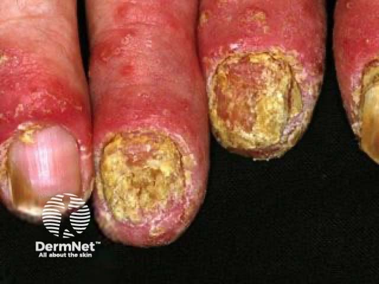
Посмотрите на снимок ниже — перед вами типичная картина псориаза на туловище.
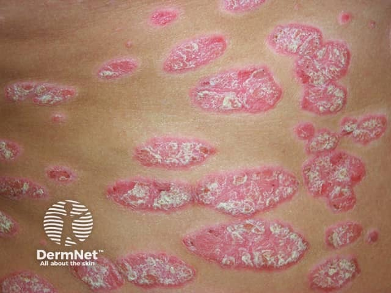
На этом кадре хорошо видны крупные бляшки с чёткими границами, покрытые серебристо-белыми чешуйками на розово-красном основании. Именно такое сочетание — эритема плюс характерное серебристое шелушение — и составляет визитную карточку болезни. Обратите внимание, насколько резко бляшки отграничены от окружающей здоровой кожи: это отличие от многих других дерматозов, где граница размытая.
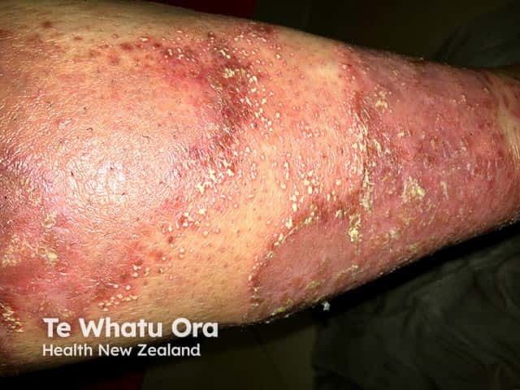
Кажется, что псориаз — болезнь кожи и только кожи, косметическая проблема, неприятная, но не опасная. На деле речь идёт о псориатической болезни — системном процессе, при котором страдают суставы, сосуды, метаболизм кальция и иммунная система в целом. Понятие «псориатическая болезнь» подчёркивает именно это: не локальный дефект кожи, а заболевание всего организма с кожными проявлениями как наиболее заметным, но далеко не единственным компонентом.
Псориаз относится к группе эритематозно-сквамозных дерматозов и занимает в ней особое место благодаря сочетанию воспаления, аномального ороговения и системных нарушений. В классификации дерматозов его выделяют в самостоятельную нозологическую единицу, отличая от себорейной экземы, розового лишая, парапсориаза и папулёзного сифилида — с каждым из этих заболеваний псориаз приходится дифференцировать клинически.
Псориаз встречается повсеместно и поражает людей любого возраста, пола и расы. Среди хронических дерматозов он занимает одно из первых мест по частоте встречаемости. Заболеваемость заметно различается в зависимости от региона, однако в целом псориаз относят к широко распространённым болезням кожи. Отдельных пиков заболеваемость достигает в пубертатном периоде и в период менопаузы — это прямо указывает на роль эндокринных сдвигов в манифестации болезни. Половых различий по частоте поражения практически нет: мужчины и женщины болеют примерно одинаково.
Этиология псориаза официально считается невыясненной. Среди нескольких конкурирующих концепций — генетической, нейрогенной, иммунной, связанной с нарушением обмена липидов — ведущей остаётся генетическая. Предполагается аутосомно-доминантный тип передачи предрасположенности, хотя полной пенетрантности нет: наличие неблагоприятного генотипа само по себе не означает, что болезнь разовьётся. Иными словами, наследуется не болезнь, а повышенная способность клеток к размножению и нестабильность иммунного ответа. Семейные формы псориаза хорошо известны: если болен один из родителей, риск у ребёнка существенно возрастает; если оба — возрастает ещё значительнее. С наследственной предрасположенностью ассоциированы антигены системы HLA, прежде всего HLA-Cw6, что подтверждает иммуногенетическую природу болезни.
Какова же роль провоцирующих, или триггерных факторов (от англ. trigger — спусковой крючок) — внешних и внутренних воздействий, которые запускают первый эпизод или вызывают обострение уже существующего псориаза? Ответ принципиален для понимания болезни: триггер не создаёт псориаз, он лишь обнажает скрытую предрасположенность. Без неё никакой стресс и никакая инфекция сами по себе псориаза не вызовут.
Триггерных факторов при псориазе несколько, и они принципиально различаются по механизму. Разберём каждый — сначала прозой, затем сведём в таблицу для сравнения.
Травма провоцирует псориатические высыпания прямо в месте повреждения кожи — физического, химического или воспалительного. Это явление получило название феномена Кебнера, или изоморфной реакции раздражения: новые папулы появляются точно по линии царапины или ссадины. Ладонно-подошвенный псориаз чаще встречается у лиц физического труда именно потому, что их кожа постоянно травмируется.
Инфекция — прежде всего стрептококковая и герпетическая — признана одним из наиболее вероятных провоцирующих факторов. Так, каплевидный псориаз, при котором остро появляется множество мелких папул, обычно связан со стрептококковой инфекцией в миндалинах.[3, с. 95] ВИЧ-инфекция занимает особое место: она не только провоцирует дебют псориаза, но и вызывает его особенно тяжёлое течение.
Эндокринные нарушения объясняют возрастные пики заболеваемости. Пубертат и менопауза, дисфункция щитовидной железы и коры надпочечников — всё это создаёт гормональный фон, при котором латентная предрасположенность реализуется в клинически выраженный псориаз.[3, с. 93]
Лекарства могут как спровоцировать первый эпизод болезни, так и вызвать обострение уже существующего псориаза. Среди наиболее значимых препаратов — пенициллины и β-адреноблокаторы; они влияют на иммунные механизмы кожи, создавая условия для гиперпролиферации кератиноцитов.
Психогенные факторы могут провоцировать как дебют псориаза, так и обострение — как кожного, так и суставного поражения. Это согласуется с нейрогенной концепцией патогенеза и объясняет, почему у многих пациентов болезнь впервые проявляется в период острого стресса.
Алкоголь способствует более тяжёлому течению псориаза. Механизм связан с иммунной дисрегуляцией и нарушением обмена липидов — обоих звеньев, уже скомпрометированных при псориазе.
Инсоляция действует неоднозначно: обычно умеренное ультрафиолетовое облучение ведёт к клиническому улучшению и используется в лечении, однако в прогрессирующей стадии и у пациентов с летней формой псориаза тот же фактор вызывает обострение.
| Триггерный фактор | Механизм влияния | Клинические особенности |
|---|---|---|
| Травма (физическая, химическая, воспалительная) | Изоморфная реакция раздражения — феномен Кебнера: новые псориатические элементы появляются строго в зоне повреждения кожи | Характерен для прогрессирующей стадии; объясняет частое поражение ладоней и подошв у рабочих |
| Стрептококковая и герпетическая инфекция | Антигенная стимуляция иммунной системы с активацией Т-хелперов и запуском воспалительного каскада в коже | Стрептококк — частый триггер каплевидного псориаза; герпесвирусы провоцируют обострения |
| Эндокринные нарушения (пубертат, менопауза, дисфункция щитовидной железы и надпочечников) | Гормональный дисбаланс изменяет пролиферацию кератиноцитов и иммунный ответ кожи | Объясняет возрастные пики заболеваемости; связан с инверсным и экссудативным псориазом |
| Лекарства (пенициллины, β-блокаторы и др.) | Иммунная дисрегуляция, непосредственное влияние на кератиноциты и медиаторы воспаления | Могут вызвать первый эпизод или обострить уже существующий псориаз |
| Психогенные факторы (острый и хронический стресс) | Нейрогуморальное влияние на иммунитет кожи через нейропептиды и ось «стресс — надпочечники» | Провоцируют дебют и обострение как кожного, так и суставного поражения |
| Алкоголь | Иммунная дисрегуляция, нарушение обмена липидов, прямое токсическое действие на кожу | Способствует более тяжёлому и упорному течению псориаза |
| Инсоляция | УФ-излучение подавляет активность кератиноцитов (терапевтический эффект) или, наоборот, усиливает воспаление при избытке | Обычно улучшает течение; но в прогрессирующей стадии и при летней форме — провоцирует обострение |
| ВИЧ-инфекция | Глубокая иммуносупрессия снимает контроль над гиперпролиферацией кератиноцитов | Вызывает особенно тяжёлое, резистентное к лечению течение заболевания |
Взгляните на таблицу выше: восемь триггеров выстроены в ряд, и сразу видно, что они действуют через совершенно разные механизмы. Одни бьют по иммунной системе напрямую (инфекция, ВИЧ, лекарства), другие работают через нейрогуморальные пути (стресс, эндокринные сдвиги), третий — механический (травма и феномен Кебнера). Алкоголь и инсоляция занимают промежуточное положение, влияя сразу на несколько звеньев. Это разнообразие механизмов объясняет, почему единой «противотриггерной» терапии не существует: нужно выявлять провокатор конкретного пациента и работать с ним прицельно.
Особого внимания заслуживает метаболическое измерение псориаза. Нарушение содержания кальцийрегулирующих гормонов при этой болезни предопределяет развитие остеопатий и других изменений, свойственных гиперпаратиреозу.[3, с. 93] Иными словами, псориаз затрагивает не только кожу, но и костно-минеральный обмен — и это ещё один аргумент в пользу концепции псориатической болезни как системного процесса, а не изолированного дерматоза.
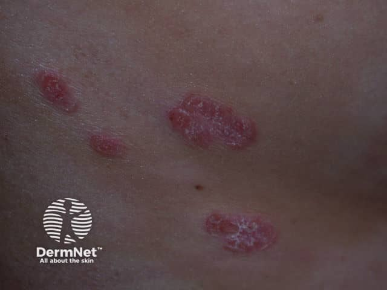
На этом снимке — характерные псориатические папулы крупным планом: розово-красные элементы с шелушением на поверхности, чётко ограниченные от окружающей кожи. Именно так выглядят первичные высыпания ещё до слияния в крупные бляшки. Свежие папулы при псориазе имеют небольшие размеры — 1–2 мм; в результате быстрого периферического роста и слияния соседних элементов они превращаются в более крупные образования — бляшки. Этот переход от точечного высыпания к обширной бляшке и составляет один из диагностически важных динамических признаков болезни.
Таким образом, псориаз — это системная болезнь с генетической основой, сложным иммунным патогенезом и многочисленными внешними провокаторами. Выяснить, какой триггер сработал у конкретного пациента — значит получить реальный рычаг влияния на течение болезни.

Патогенез псориаза: иммунные, клеточные и молекулярные механизмы
Псориаз долгое время считали болезнью кератиноцита: клетка делится слишком быстро — вот и бляшка. Картина оказалась сложнее. Кератиноцит действительно в центре событий, но не как первопричина, а как мишень и усилитель — мишень иммунной атаки и усилитель воспаления, которое само же и поддерживает.
Сегодня выделяют несколько концепций происхождения псориаза: генетическую (повышенная способность клеток к размножению, закреплённая наследственно), нейрогенную (нейрогуморальная предрасположенность), гипотезу врождённой нестабильности лизосом и структурных дефектов капилляров кожи, нарушение обмена липидов, а также иммунную — повышенная активность Т-хелперов при дефекте Т-супрессоров. Концепции не исключают друг друга: каждая описывает своё звено одной цепочки.
Цепочка начинается с триггера. Инфекция, стресс, травма или лекарство активируют дендритные клетки дермы — прежде всего клетки Лангерганса (резидентные антигенпрезентирующие клетки эпидермиса). Они захватывают предполагаемый антиген и представляют его Т-лимфоцитам в лимфатическом узле. Т-клетки образуют бластные формы, пролиферируют и возвращаются именно в те участки кожи, где встретили антиген. Этот «адрес возврата» объясняет, почему бляшки возникают на одних и тех же местах при каждом обострении.
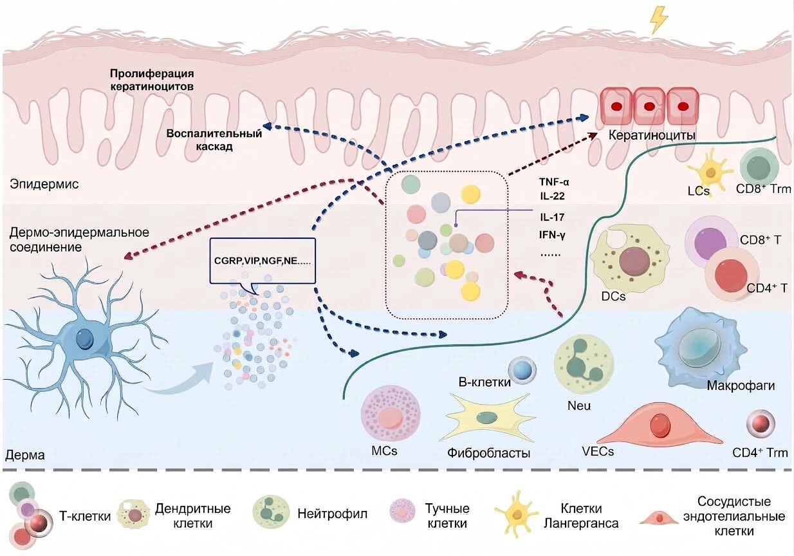
Посмотрите на схему поперечного среза кожи. Она показывает, как именно устроено псориатическое воспаление — воспаление, поддерживаемое постоянным взаимодействием иммунных клеток дермы с кератиноцитами эпидермиса. В дерме видны Т-лимфоциты и дендритные клетки, в эпидермисе — утолщённые ряды кератиноцитов; между слоями — нейропептидные сигналы от нервных окончаний. Ни один элемент не работает изолированно: схема буквально показывает сеть, а не одностороннюю стрелку.
Центральное патогенетическое событие — взаимосвязь «мононуклеар — кератиноцит». Активированные Т-хелперы выделяют цитокины: TNF-α, IL-17 и IL-23. TNF-α запускает воспалительный каскад и повышает экспрессию молекул адгезии на эндотелии, облегчая приток новых лейкоцитов. IL-23 удерживает Th17-клетки в активном состоянии. IL-17 — главный «исполнитель»: он напрямую действует на кератиноцит, заставляя его выделять медиаторы воспаления и факторы роста. Кератиноцит из пассивной мишени превращается в активного участника: он сам начинает производить хемокины, зазывающие новые нейтрофилы.
Нейтрофилы появляются не случайно. В псориатических бляшках обнаружено вещество, похожее на лейкотриен В4 и обладающее выраженным свойством привлекать нейтрофилы.[3, с. 94] Прибыв в эпидермис путём диапедеза, они формируют под роговым слоем микроабсцессы Мунро — один из патогномоничных морфологических признаков псориаза.[3, с. 94]
Следствием иммунной атаки становится гиперпролиферация кератиноцитов — аномально ускоренное деление клеток базального слоя эпидермиса, при котором путь от митоза до отшелушивания сокращается с нормальных 28 суток примерно до 3–4 суток. Клетки просто не успевают созреть: зернистый слой истончается или исчезает вовсе, ороговение остаётся неполным — развивается паракератоз.[6, с. 19] Нарушение дифференцировки эпидермиса и есть то центральное звено, которое превращает иммунный сигнал в видимую бляшку с серебристыми чешуйками.
Параллельно в дерме разворачивается ангиогенез псориаза — рост новых сосудов и расширение уже существующих. Цитокины, прежде всего VEGF, выделяемый кератиноцитами, стимулируют пролиферацию эндотелия. Сосочки дермы удлиняются, в них формируются клубочки из полнокровных капилляров. Именно повреждение этих капилляров при поскабливании даёт третий элемент псориатической триады — точечное кровотечение (симптом кровяной росы Ауспитца). При распространённом псориазе, токсидермии и других тяжёлых дерматозах генерализованная вазодилатация способна привлекать в кожный кровоток до 10–20% циркулирующей крови — объём, достаточный для нарушения теплообмена и создания нагрузки на сердечно-сосудистую систему.
Не будь нейрогенного компонента, механизм рецидивов после стресса пришлось бы объяснять случайностью. На деле нервные окончания дермы выделяют нейропептиды — субстанцию P, нейропептид Y, кальцитонин-ген-связанный пептид (CGRP). Субстанция P активирует тучные клетки и усиливает экспрессию молекул адгезии, удерживая воспаление в активном состоянии. Нейропептиды соединяют психический стресс с биохимией бляшки — и делают псориаз поистине психосоматическим заболеванием.
Итог патогенетической цепочки таков: триггер активирует клетки Лангерганса → те запускают Т-клеточный ответ с выделением IL-17, IL-23, TNF-α → цитокины переводят кератиноцит в режим гиперпролиферации и нарушают его дифференцировку → нейтрофилы формируют микроабсцессы Мунро → ангиогенез и нейропептиды замыкают петлю, не давая воспалению угаснуть. Разрыв любого звена этой цепи — мишень для современных биологических препаратов, блокирующих IL-17 или IL-23.
Гистологическая картина и псориатическая триада: морфологические основы диагностики
Первичный морфологический элемент при псориазе — эпидермодермальная папула, то есть попросту уплотнение, захватывающее сразу и эпидермис, и верхний слой дермы. Свежая папула невелика — всего 1–2 мм в диаметре — и розово-красного цвета. Благодаря быстрому периферическому росту и слиянию соседних элементов она превращается в бляшку: сначала лентикулярную с диаметром 0,5–0,7 см, затем нуммулярную — 1–3 см. Именно то, что происходит внутри этой папулы, и объясняет всё, что дерматолог видит снаружи.
Посмотрите на гистологический срез псориатической бляшки ниже — он показывает сразу несколько ключевых изменений одновременно.
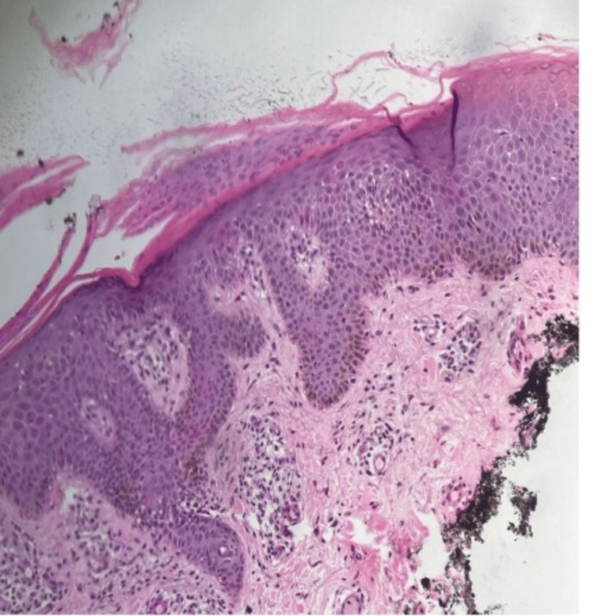
На этом препарате, окрашенном гематоксилином и эозином, хорошо видны два главных структурных сдвига. Первый — акантоз, то есть попросту утолщение шиповатого слоя эпидермиса с характерным удлинением его выростов вглубь дермы: они вытягиваются в тонкие колонны, уходящие между сосочками, — так называемый межсосочковый акантоз. Второй — паракератоз, то есть попросту неполное ороговение: клетки рогового слоя сохраняют ядра, кератогиалин в них не откладывается, зернистый слой исчезает или резко истончается — это и есть агранулёз. Рыхло лежащие клетки с ядрами в роговом слое — прямое следствие нарушенного соотношения пролиферации и дифференцировки через систему цАМФ–цГМФ: клетки успевают размножиться, но не успевают дозреть.
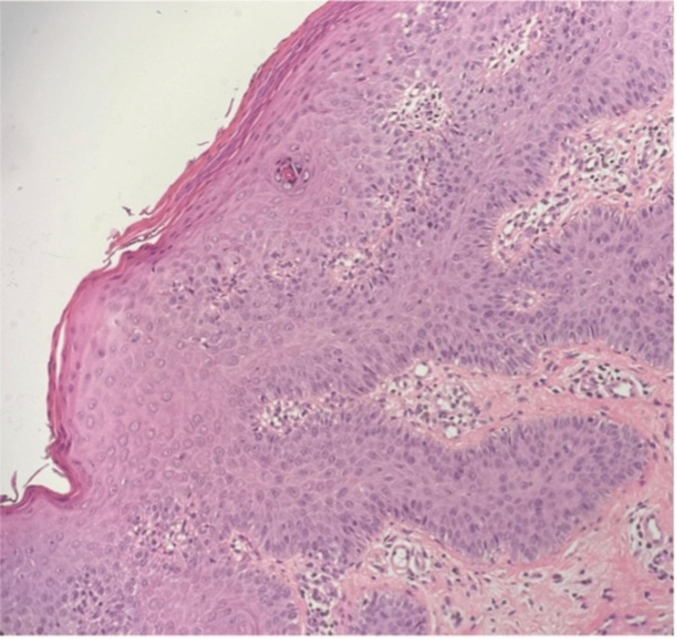
На этом втором срезе отчётливее прослеживается другая деталь: над самыми вершинами удлинённых сосочков дермы эпидермис истончён до 2–3 слоёв клеток. Именно здесь, в сосочковом слое, расширяются и переполняются кровью капилляры, образующие характерные клубочки. Воспалительный инфильтрат из лимфоцитов, гистиоцитов и нейтрофилов окружает эти сосуды. Нейтрофилы мигрируют через эпидермис — этот процесс называется экзоцитозом — и скапливаются в роговом или паракератотическом слое, формируя микроабсцессы Мунро, то есть попросту очаговые скопления нейтрофильных гранулоцитов внутри самого эпидермиса.[6, с. 111] Это не гнойники в привычном смысле — они лишены полости и капсулы, но их обнаружение в биоптате служит одним из патогномоничных признаков псориаза.
Теперь — о том, как эта гистологическая картина читается без микроскопа, прямо у постели больного. Метод послойного поскабливания, или гратаж, позволяет последовательно обнажать каждый из изменённых слоёв и выявить псориатическую триаду — три феномена, следующих строго друг за другом.[6, с. 30]
Первый — феномен стеаринового пятна: при поскабливании даже внешне гладкой папулы чешуйки начинают осыпаться в изобилии, поверхность становится матово-белой и напоминает соскоб со стеаринового пятна. Причина именно в паракератозе: рыхло сцеплённые клетки без кератогиалина отделяются легко, пластами, и это усиление шелушения — прямое отражение нарушенного ороговения.
Второй — феномен терминальной плёнки: когда все чешуйки удалены, дальнейшее поскабливание отслаивает тончайшую просвечивающую плёнку, покрывающую весь элемент целиком. Это и есть истончённый до предела эпидермис над вершинами сосочков — те самые 2–3 слоя клеток, которые остаются там, где акантоз в межсосочковых зонах резко контрастирует с почти полным исчезновением эпидермиса над сосочковыми выростами.
Третий — феномен кровяной росы Полотебнова, или феномен Ауспитца: стоит осторожно убрать терминальную плёнку, как на обнажившейся влажной поверхности выступают точечные капли крови.[6, с. 111] Они возникают ровно в тех местах, где под плёнкой располагались вершины сосочков с переполненными клубочками капилляров — малейшее механическое воздействие вскрывает их. Последовательность триады неслучайна: каждый следующий феномен обнажает более глубокий слой изменений, и вместе они воспроизводят гистологическую архитектуру бляшки снаружи внутрь.
Ещё один диагностически важный признак прогрессирующей стадии — феномен Кёбнера, или изоморфная реакция: на месте любой травмы кожи — царапины, расчёса, даже случайного укола — через несколько дней появляются свежие псориатические папулы, нередко выстраивающиеся линейно по ходу повреждения. Объяснение — в состоянии повышенной готовности кожи к воспалительной реакции: малейшее раздражение запускает тот же каскад гиперпролиферации и нарушенной дифференцировки, что лежит в основе всей болезни.[6, с. 111] Феномен Кёбнера регистрируется только в прогрессирующей стадии и служит её надёжным клиническим маркером — в стационарной и регрессирующей стадиях он отрицателен.
После разрешения папул на их месте нередко остаётся временная гипопигментация — псориатическая псевдолейкодерма: вторичный элемент, замыкающий полный морфологический цикл от первой папулы 1–2 мм до регрессировавшей бляшки.
Клинические формы псориаза: вульгарный, каплевидный, пустулёзный, пятнистый и эритродермия
Псориаз — не одна болезнь с одним лицом, а семейство клинических форм, каждая из которых ведёт себя по-своему. Их объединяет первичный элемент — плоская воспалительная папула с серебристо-белыми чешуйками, — но дальше пути расходятся: у одной формы элементы сливаются в массивные бляшки, у другой рассыпаны мелкой дробью по туловищу, у третьей на смену чешуйкам приходят пустулы, у четвёртой поражение охватывает весь кожный покров целиком.
Посмотрите на сравнительную таблицу клинических форм — она собирает эти различия в одном месте. Разберём каждую строку подробно, потому что картина, сжатая в ячейку, требует объяснения.
| Форма | Первичный элемент | Типичная локализация | Характерные особенности | Системные нарушения |
|---|---|---|---|---|
| Вульгарный (бляшечный) | Папула 1–2 мм → нуммулярные элементы → бляшки с серебристыми чешуйками | Локти, колени, крестец, волосистая часть головы | Фестончатый край, псевдоатрофический ободок Воронова в стадии регресса, феномен Кебнера | Нет или минимальные |
| Каплевидный | Мелкие лентикулярные папулы, диссеминированные | Туловище, конечности — повсеместно | Острое начало после стрептококковой инфекции миндалин; элементы не прогрессируют дальше лентикулярных размеров | Нет |
| Пятнистый | Пятна со слабой инфильтрацией, мало отличающиеся от токсидермии | Туловище | Острое начало, нечёткая псориатическая триада | Нет |
| Экссудативный | Папулы и бляшки с серовато-жёлтыми чешуйко-корками | Складки, туловище | Мокнутие в складках; ассоциирован с ожирением, сахарным диабетом, гипофункцией щитовидной железы | Нет |
| Себорейный | Бляшки с желтоватым шелушением | Волосистая часть головы, носогубные складки; «псориатическая корона» на лбу | Нечёткие границы, напоминает себорейный дерматит | Нет |
| Ладонно-подошвенный | Гиперкератотические бляшки, трещины, крупно-пластинчатое шелушение | Ладони, подошвы; тенар и гипотенар | Чаще у лиц физического труда 30–50 лет; фестончатый край; симулирует омозолелости | Нет |
| Пустулёзный (тип Цумбуша) | Стерильные пустулы на фоне яркой эритемы | Генерализованный — всё тело | Жжение и болезненность; микроабсцессы Мунро; лихорадка, лейкоцитоз, повышение СОЭ | Выраженные: лихорадка 38–39 °С, недостаточность кожи |
| Пустулёзный (тип Барбера) | Пустулы 2–5 мм на бляшках | Тенар и гипотенар ладоней, подошвы — симметрично | Часто поражение ногтей | Нет или умеренные |
| Псориатическая эритродермия | Бляшки неразличимы на фоне сплошной гиперемии | Весь кожный покров | Яркая гиперемия, крупное шелушение, лимфаденопатия; выпадение волос и ногтей | Тяжёлые: температура 38–39 °С, нарушение терморегуляции, водно-электролитный дисбаланс, гипопротеинемия, риск сердечной недостаточности |
Вульгарный псориаз
Вульгарный (обыкновенный, бляшечный) псориаз — самая частая форма и точка отсчёта для всего остального. Он начинается со свежей папулы размером 1–2 мм: розово-красной, плоской, покрытой рыхлыми серебристо-белыми чешуйками, которые осыпаются при малейшем поскабливании. Представьте обычную ластичную крошку, которая остаётся, когда трёшь бумагу, — именно так ведут себя псориатические чешуйки: они не держатся, а буквально слетают пластами. Вот тот единственный бытовой образ, который здесь честно помогает понять характер шелушения.
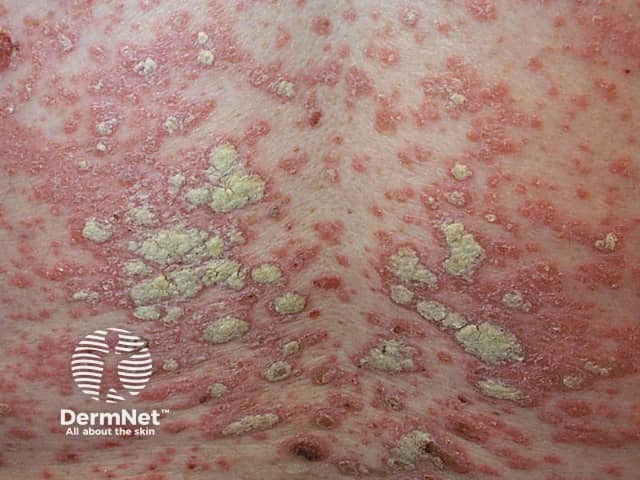
Посмотрите на снимок выше. На нём видны крупные эритематозные бляшки — именно то, во что превращаются исходные папулы после периферического роста и слияния. Края бляшек фестончатые, поверхность покрыта характерными серебристо-белыми чешуйками; по краю отдельных элементов заметен псевдоатрофический ободок Воронова — признак регрессирующей стадии, когда папула рассасывается от центра к периферии и оставляет за собой кажущуюся атрофическую зону.
Излюбленная локализация вульгарного псориаза — разгибательные поверхности конечностей (локтевые и коленные суставы), волосистая часть головы и область крестца. В прогрессирующей стадии характерен феномен Кебнера: новые элементы появляются на местах мелких травм и расчёсов. После регресса на месте бляшек нередко остаются временные гипопигментированные пятна.
Каплевидный псориаз
Каплевидный псориаз отличается от вульгарного уже первым взглядом на больного: вместо отдельных крупных бляшек по туловищу и конечностям рассыпаны десятки, а порой и сотни мелких папул. Элементы достигают лентикулярных размеров и на этом останавливаются — дальнейшего слияния в бляшки не происходит.
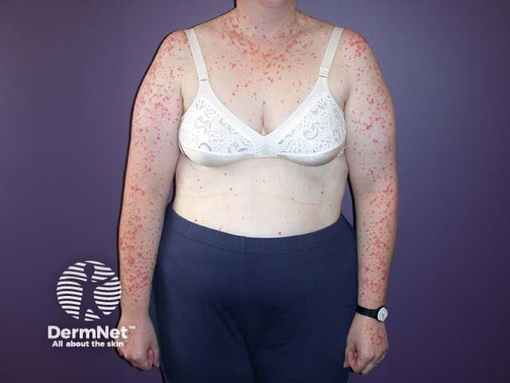
На этом снимке хорошо видна картина каплевидного псориаза: туловище и руки усеяны мелкими красноватыми папулами, которые не сливаются между собой. Обратите внимание на равномерное рассеивание элементов — именно это отличает каплевидную форму от вульгарной, где бляшки собираются в излюбленных местах.
Начало острое, нередко можно проследить прямую связь с предшествующей стрептококковой инфекцией миндалин. Это важно практически: пациент с ангиной, через одну-две недели покрывшийся мелкими папулами по всему телу, — типичный каплевидный псориаз.
Пятнистый псориаз
Пятнистый псориаз — форма с острым началом, при которой инфильтрация элементов выражена слабо, а сами высыпания напоминают токсидермию: пятна почти не возвышаются над кожей, псориатическая триада нечёткая. Диагностика требует особого внимания именно потому, что классические псориатические феномены здесь смазаны.
Себорейный, экссудативный и ладонно-подошвенный псориаз
Себорейный псориаз локализуется там, где работают сальные железы: волосистая часть головы, носогубные складки, область лба. Характерный признак — «псориатическая корона» на границе волосистой части головы и лба. Шелушение желтоватое, границы очагов нечёткие, что создаёт сходство с себорейным дерматитом.
Экссудативный псориаз ассоциирован с ожирением, сахарным диабетом и гипофункцией щитовидной железы: бляшки покрыты не серебристыми, а серовато-жёлтыми чешуйко-корками, в складках возможно мокнутие.
Ладонно-подошвенный псориаз чаще развивается у людей физического труда в возрасте 30–50 лет. Клинически он варьирует: от обычных псориатических папул и гиперкератотических элементов, симулирующих омозолелости, до сплошного поражения подошв с крупно-пластинчатым шелушением, глубокими трещинами и фестончатым краем.
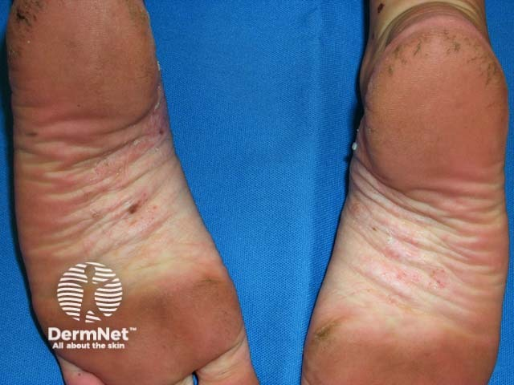
На снимке подошвенных поверхностей двух стоп видно именно это: сплошная гиперкератотическая зона с выраженным шелушением и трещинами по всей поверхности подошвы. Фестончатая граница очага, отделяющая поражённую кожу от здоровой, — ключевой ориентир при осмотре.
Пустулёзный псориаз
Пустулёзный псориаз — принципиально иная ситуация, и морфологически, и клинически. Его основа — микроабсцессы Мунро: скопления нейтрофилов в эпидермисе, которые внешне выглядят как небольшие пузырьки с мутным содержимым. Принципиально важно: содержимое пустул стерильное, бактерий там нет, хотя картина напоминает гнойное поражение.
Различают две формы. Генерализованный пустулёзный псориаз, тип Цумбуша — тяжёлое состояние: на фоне яркой эритемы быстро появляются стерильные пустулы, сопровождающиеся жжением и болезненностью; нарастает лихорадка, лейкоцитоз, повышается СОЭ. После разрешения пустул процесс возвращается к исходному псориатическому виду, однако это происходит не однажды.

На этих двух снимках — генерализованный пустулёзный псориаз Цумбуша. На коже живота видны пустулы, сливающиеся в целые «озёра» на фоне разлитой эритемы. Обратите внимание: никаких отдельных чётких элементов — воспаление сплошное, и уже на этой картинке понятно, почему состояние больного бывает столь тяжёлым.
При генерализованной форме развивается то, что учебник определяет как недостаточность кожи: утрата терморегуляции, водно-электролитного и белкового баланса, барьерной функции — состояние, требующее неотложного лечения наравне с ожогами. Пустулёзный псориаз вместе с эритродермией входит в перечень дерматозов, при которых такая недостаточность кожи развивается прямо.
Локализованная форма, тип Барбера, ограничена ладонями и подошвами: бляшки в области тенара и гипотенара с многочисленными пустулами диаметром 2–5 мм, поражение симметричное, нередко вовлекаются ногти. Течение хроническое, системных нарушений нет или они минимальны.
Псориатическая эритродермия
Псориатическая эритродермия — наиболее тяжёлая форма. Она развивается у больных распространённым псориазом в прогрессирующей стадии как неспецифическая токсико-аллергическая реакция: папулы и бляшки становятся неразличимыми на фоне сплошной воспалительной гиперемии, охватывающей весь кожный покров.
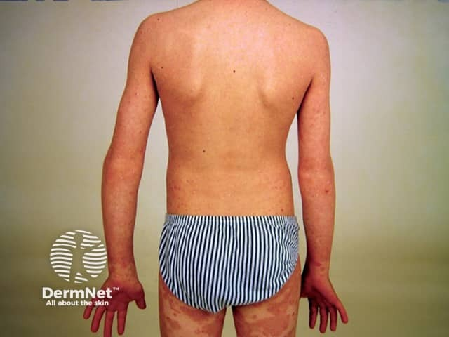
На снимке — псориатическая эритродермия у ребёнка: спина, руки и задняя поверхность бёдер равномерно гиперемированы и инфильтрированы, видно крупное шелушение. Отдельных бляшек уже не разобрать — кожа поражена сплошь. Именно так выглядит состояние, при котором кожа перестаёт справляться со своими функциями.
Общее состояние при эритродермии резко нарушено: температура поднимается до 38–39 °С, нарушается терморегуляция, развиваются водно-электролитный дисбаланс и гипопротеинемия, реален риск сердечной недостаточности. Характерны генерализованная лимфаденопатия, возможно выпадение волос и ногтей. По механизму это та же недостаточность кожи, что и при генерализованном пустулёзном псориазе, — со всеми вытекающими последствиями для ведения больного.
Как видите в таблице, все девять форм объединены общим первичным элементом, но расходятся во всём остальном: в размере и характере высыпаний, в локализации, в наличии системных нарушений. Главное клиническое разграничение — между формами без системного поражения (вульгарный, каплевидный, себорейный, ладонно-подошвенный) и формами с недостаточностью кожи (генерализованный пустулёзный псориаз Цумбуша и эритродермия), при которых лечение приобретает характер неотложного.
Артропатический псориаз и поражение ногтей: системные проявления
Псориаз редко ограничивается кожей. У части больных в процесс вовлекаются ногти и суставы — и тогда болезнь перестаёт быть просто дерматологической проблемой.
Начнём с ногтей, потому что их изменения врач видит раньше всего и именно они нередко подсказывают диагноз ещё до развёрнутой суставной картины.
Поражение ногтей встречается при любой клинической форме псориаза и выглядит по-разному в зависимости от того, какой участок матрикса затронут. Первый и самый узнаваемый вариант — симптом напёрстка (thimble sign): на поверхности ногтевой пластинки появляются точечные углубления, напоминающие рабочую поверхность швейного напёрстка. Они возникают из-за очагов паракератоза в проксимальной части матрикса — роговые клетки там формируются неправильно и выпадают, оставляя ямки. Второй вариант — пятнистая форма: скопление паракератозных клеток и серозной жидкости под пластинкой создаёт желтовато-коричневое пятно, просвечивающее сквозь ноготь, — симптом «масляного пятна». Он типичен для прогрессирующей стадии.
Два следующих варианта затрагивают уже саму пластинку. Онихолизис — отделение ногтя от ложа — возникает из-за подногтевого гиперкератоза: эпителий ногтевого ложа усиленно пролиферирует, нарастает снизу и буквально приподнимает пластинку.[3, с. 96] Клинически это хорошо имитирует онихомикоз, и именно поэтому при подозрении на грибок у больного псориазом нужно сначала провести микроскопию соскоба, а не назначать антимикотик вслепую. Онихогрифоз — наиболее грубая деформация: пластинка утолщается, становится неровной, испещряется небольшими гребешками серовато-жёлтого цвета и приобретает вид когтя, приподнятого над ложем всё тем же подногтевым гиперкератозом. Наконец, четвёртый вариант — лейкоонихия, белые пятна, — возникает при поражении средней части матрикса.[3, с. 96]
Перейдём к суставам. Псориатический артрит — воспалительное поражение суставов, развивающееся у больных псориазом, — считается одной из наиболее тяжёлых форм заболевания, нередко приводящей к инвалидизации.[3, с. 97] Важно понимать, что суставы и кожа живут не в строгой очерёдности: поражение суставов может предшествовать кожным проявлениям, совпадать с ними или развиваться позже.[3, с. 97] В дальнейшем рецидивы кожного процесса и артрита нередко синхронны — это наблюдение само по себе помогает установить связь между ними.
Начинается артрит обычно с дистальных межфаланговых суставов кистей и стоп, особенно там, где уже есть онихолизис — поражение концевых фаланг и ногтей здесь выступают почти как единый блок. Затем процесс может распространяться на крупные суставы и позвоночник, принимая картину анкилозирующего спондилоартрита. Кожные высыпания при артропатическом псориазе отличаются рядом особенностей: они склонны к экссудации и пустулизации, устойчивы к обычной терапии.
Рентгенологически псориатический артрит выглядит так: остеопороз суставных концов костей, равномерное сужение суставных щелей и очаги деструкции. Посмотрите на эту триаду вместе: остеопороз здесь — не просто «разреженная кость», а признак активного воспаления; сужение щелей говорит о том, что хрящ уже разрушается; а деструктивные очаги — это безвозвратные потери костной ткани. Именно сочетание всех трёх признаков делает прогноз серьёзным и объясняет, почему болезнь так часто завершается инвалидизацией.
Теперь разберём, как выглядит этот путь на практике. Три шага — от осмотра до действия.
Шаг первый: что видит врач. На приёме — пациент с псориатическими бляшками и жалобами на боль и отёк в дистальных межфаланговых суставах. На ногтях той же руки — точечные углубления и желтовато-коричневые пятна под пластинкой, края ногтя начинают отходить от ложа.
Шаг второй: что из этого следует. Сочетание характерных кожных высыпаний, поражения ногтей в форме напёрстка и онихолизиса с воспалением именно дистальных суставов — это не случайное совпадение. Такая топография высоко специфична для псориатического артрита. Врач направляет пациента на рентгенографию кистей: если на снимке обнаруживается остеопороз эпифизов, сужение суставных щелей и деструктивные очаги, диагноз становится определённым.
Шаг третий: что делать дальше. Лечение строится на двух опорах. Системно — нестероидные противовоспалительные средства: при артропатическом псориазе применяют бруфен, индометацин. Локально, при выраженном воспалении в конкретном суставе, — внутрисуставное введение дипроспана. Параллельно проводится местная терапия кожных проявлений: в прогрессирующей и стационарной стадиях — противовоспалительные и кератолитические средства, в частности 1–2% салициловый крем или мазь[6, с. 114]; при локализации на волосистой части головы — 1% серно-салициловая мазь.[6, с. 114] В регрессирующей стадии переходят к редуцирующим препаратам: 2–5% серно-дегтярная мазь, 5% ихтиоловая, 5–10% нафталанная — концентрацию действующего вещества наращивают постепенно.[6, с. 114]
Главное, что нужно удержать в памяти: псориатический артрит — это системное осложнение, способное инвалидизировать пациента независимо от тяжести кожного процесса, а онихолизис и поражение дистальных суставов на одной руке — почти всегда сигнал об одном и том же заболевании.
Стадии течения псориаза и сезонные типы: прогрессирующая, стационарная, регрессирующая
Псориаз — болезнь, которая не стоит на месте. Каждое обострение проходит через три последовательные стадии: прогрессирующую, стационарную и регрессирующую. Понимать их границы необходимо прежде всего потому, что выбор наружного лечения жёстко привязан к стадии: одна и та же мазь в прогрессирующей стадии обострит процесс, а в регрессирующей — станет основным инструментом терапии.
Разберём каждую стадию по порядку — от первого высыпания до угасания очага.
Прогрессирующая стадия
Болезнь начинается с появления свежих милиарных папул размером 1–2 мм. Они растут по периферии, и там, где кожа ещё не вовлечена в процесс, хорошо заметна гиперемическая кайма — венчик роста, или ободок Пильнова. Шелушение в этот период сосредоточено в центральной части элемента, а краевая кайма остаётся чистой — именно это соотношение и отличает растущий элемент от стабильного.
Сравните это с тем, что будет в стационарной стадии: там чешуйки покроют всю поверхность, а не только центр. Один и тот же признак — распределение шелушения — сообщает, куда движется процесс.
Второй важный признак прогрессирующей стадии — положительная изоморфная реакция, или феномен Кёбнера: новые псориатические элементы возникают на местах мелких травм и расчёсов, нередко располагаясь линейно, строго повторяя контур повреждения. Механизм — выраженная гиперергия кожи: малейшее раздражение запускает воспалительный ответ, достаточный для формирования полноценного псориатического элемента. Именно поэтому в прогрессирующей стадии противопоказаны раздражающие процедуры: горячие ванны, интенсивный массаж, ультрафиолет в эритемных дозах. Пациента беспокоит зуд, что дополнительно провоцирует расчёсы — и замыкает порочный круг. Из наружных средств в прогрессирующей стадии допустим 1–2% салициловый крем или мазь с противовоспалительным и мягкорастворяющим действием.
Стационарная стадия
Со временем появление новых папул прекращается, рост старых останавливается — болезнь входит в стационарную стадию. Окраска элементов меняется: яркая гиперемия сменяется выраженным синюшным оттенком. Шелушение, прежде сконцентрированное в центре, теперь распространяется на всю поверхность бляшки. Феномен Кёбнера в этой стадии, как правило, угасает.
Стационарная стадия — окно для активной наружной терапии. Кожа уже не отвечает на раздражение новыми высыпаниями, и можно переходить к более агрессивным препаратам: тем же 1–2% салициловым составам, топическим кортикостероидам, препаратам витамина D₃.
Регрессирующая стадия
Переход в регрессирующую стадию виден невооружённым глазом. Вокруг каждой бляшки появляется беловатая полоска шириной в несколько миллиметров с нежной складчатостью рогового слоя — псевдоатрофический ободок Воронова. «Псевдо» — потому что атрофии кожи здесь нет: это всего лишь зона, где активный рост уже прекратился, а эпидермис начинает перестраиваться.
Посмотрите на последовательность разрешения: сначала исчезает шелушение в центре бляшки, затем нормализуется окраска, и наконец рассасывается сама папула — строго от центра к периферии. В итоге на месте бляшки остаётся участок временной гипопигментации — псориатическая псевдолейкодерма. Пигмент возвращается самостоятельно.
В регрессирующей стадии показана активная наружная терапия: 2–5% серно-дегтярная мазь, 5% ихтиоловая мазь, 5–10% нафталанная мазь. Теперь, когда феномен Кёбнера отсутствует, раздражающие компоненты работают на пользу — ускоряют рассасывание инфильтрата.
Переход между стадиями не мгновенный. Появление ободка Пильнова означает: рост идёт прямо сейчас. Появление ободка Воронова означает: рост остановился. Это две морфологические «стрелки», которые врач читает без всяких анализов — прямо у постели больного.
Сезонные типы псориаза
Псориаз имеет выраженную сезонность. Наиболее распространён зимний тип псориаза — с обострениями в холодное время года. Считается, что короткий световой день снижает уровень инсоляции, а холод сам по себе повреждает кожный барьер, запуская провоспалительные каскады. Инсоляция при зимнем типе оказывает терапевтическое действие, и это прямо используется в лечении: ПУВА-терапия и узкополосный ультрафиолет (311 нм) воспроизводят эффект летнего солнца.
Реже встречается летний тип — с обострениями летом. Здесь та же инсоляция становится провоцирующим фактором, и ультрафиолетовые процедуры таким пациентам, напротив, противопоказаны. Важно помнить и в прогрессирующей стадии зимнего типа: даже «благоприятный» ультрафиолет в момент активного роста элементов обострит процесс.
В настоящее время всё чаще диагностируют так называемый смешанный, или неопределённый, тип — когда рецидивы возникают в любое время года без чёткой сезонной закономерности. Рост доли смешанного типа, вероятно, связан с тем, что современный человек проводит большую часть времени в помещении с искусственным освещением и стабильной температурой, и контраст «тепло–холодно» для него сглажен.
Главный практический вывод раздела: стадия псориаза определяет тактику лечения жёстче, чем любой другой параметр. Ободок Пильнова говорит «не трогать», ободок Воронова — «действовать». Спутать их — значит назначить терапию, которая вместо помощи распространит процесс.
Дифференциальная диагностика и лечение псориаза
Кажется, что псориаз — болезнь настолько характерная, что спутать её с чем-то другим практически невозможно: серебристые чешуйки, чёткие бляшки, известная триада. На деле в прогрессирующей стадии, особенно при нетипичной локализации, псориаз регулярно имитирует несколько других дерматозов — и именно в этот момент ошибочный диагноз стоит пациенту месяцев неэффективного лечения.
Чаще всего дифференциальный диагноз проводят с красным плоским лишаём, себорейной экземой, розовым лишаём, парапсориазом и папулёзным сифилидом. Главный ориентир — мономорфность сыпи: при псориазе все элементы одного рода (папулы и бляшки), тогда как при экземе полиморфизм вынесен в само определение болезни. Красный плоский лишай даёт плоские полигональные папулы с сиреневато-перламутровым оттенком и симптомом Уикхема — тонкой белёсой сеточкой на поверхности, — которой при псориазе нет. Себорейная экзема располагается преимущественно на волосистой части головы, носогубных складках и груди, чешуйки у неё жирные и желтоватые, а псориатическая триада (феномен стеаринового пятна — симптом плёнки — точечное кровотечение) отрицательна. При розовом лишае элементы вытянуты вдоль линий Лангера и разрешаются сами за 6–8 недель; характерна «материнская бляшка». Папулёзный сифилид — самый коварный из кандидатов: папулы медно-красные, плотные, расположены в том числе на ладонях и подошвах, реакция Вассермана положительна. Руброфития, затрагивающая крупные складки, напоминает псориаз эритемой и шелушением, но исследование на грибы решает вопрос быстро.
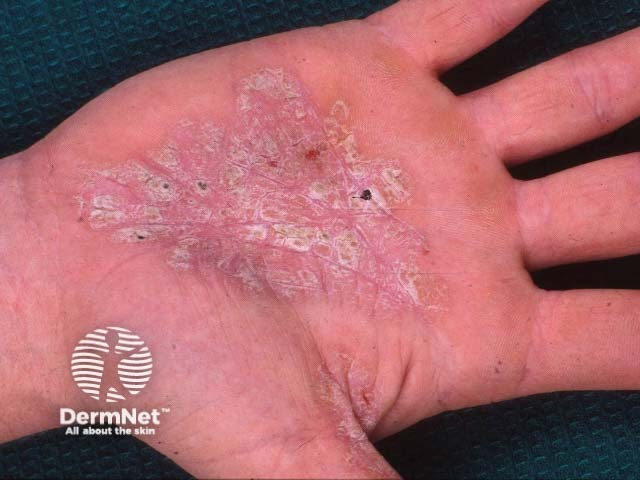
Посмотрите на снимок выше: ладонная поверхность кисти с чётко очерченным гиперкератотическим очагом — так выглядит псориазиформный гиперкератоз. Именно такая картина вводит в заблуждение: по одному лишь виду кисти дифференцировать псориаз ладоней от руброфитии или экземы без лабораторного подтверждения затруднительно. Границы резкие, шелушение плотное — признаки, которые есть и там, и там. Ключ в совокупности: псориатическая триада, поражение ногтей, типичные бляшки на других участках и отрицательный анализ на грибы.
Лечение псориаза строится как комплекс из четырёх обязательных составляющих: общая терапия, местная терапия, физиотерапия и соблюдение режима с диетой. Ни одна из них не заменяет остальные. При обострении из рациона исключают острое, копчёное, солёное, консервированное, алкоголь и сладости — стандартная исключающая диета при воспалительных дерматозах.[6, с. 33] Гигиенический режим предполагает щадящее мытьё: без жёсткой мочалки и мыла, с хлопчатобумажной рукавичкой и гелями для душа. Диспансерное наблюдение включает рекомендацию по сну — не менее 9–10 часов, — активный двигательный режим и профилактику простудных заболеваний как частых триггеров обострений.
Разберём общую терапию. Практически всем пациентам назначают седативные препараты (препараты валерианы, пустырника, брома, при необходимости — транквилизаторы) и антигистаминные средства. Гепатопротекторы — эссенциале, фосфаден, легалон — входят в схему, потому что печень участвует в метаболизме многих применяемых препаратов, а нарушения её функции сами по себе усугубляют течение дерматоза. Дезинтоксикационная терапия — гемосорбция, плазмаферез — показана при тяжёлом течении. Десенсибилизирующие средства (натрия тиосульфат, кальция глюконат) уменьшают аллергический компонент воспаления. При артропатическом псориазе подключают нестероидные противовоспалительные средства, при экссудативном варианте — диуретики, при стойком зуде, ассоциированном со стрессом, — психотропные препараты: антидепрессанты, транквилизаторы, нейролептики. Психотерапия при псориазе — не факультатив. Суггестивная терапия и гипноз применяются при нейрогенно-провоцируемых формах, иглорефлексотерапия — при мучительном зуде.
Иммуномодуляторы включают при иммунодефицитных состояниях. Системные кортикостероиды в схему псориаза вводят осторожно: они обладают противовоспалительным, противоаллергическим, антипролиферативным и иммуносупрессорным действием, однако дают лишь морбидостатический эффект — подавляют проявления, но не устраняют причину. После отмены без постепенного снижения дозы возможен тяжёлый синдром отмены с рикошетным обострением, вплоть до эритродермии, — именно поэтому при эритродермии их назначают коротким курсом с обязательным постепенным снижением и корригирующей терапией при высоких дозах.
Тяжёлые упорные формы требуют цитостатиков и иммунодепрессантов — антипролиферативных средств, основным показанием для которых служат именно пролиферативные заболевания кожи. Метотрексат при псориазе — антагонист фолиевой кислоты, подавляющий избыточное деление кератиноцитов — применяют в дозе 25–50 мг внутрь или парентерально. Циклоспорин А — ингибитор кальциневрина, блокирующий активацию T-лимфоцитов — назначают в дозах от 0,5 до 5 мг/кг в сутки. Оба препарата требуют мониторинга функции почек и печени. Ретиноиды — тигазон и неотигазон, синтетические производные витамина А — оказывают антипролиферативное действие и нормализуют рогообразование в эпидермисе. Важно: ретиноиды тератогенны при приёме внутрь, поэтому женщинам репродуктивного возраста необходима надёжная контрацепция во время лечения и после его окончания.
Биологическая терапия псориаза — класс препаратов, точечно блокирующих ключевые цитокины воспаления — стала главным прорывом последних двадцати лет. Ингибиторы ФНО-α (адалимумаб, инфликсимаб, этанерцепт) и ингибиторы ИЛ-17 (секукинумаб, иксекизумаб) показаны при среднетяжёлом и тяжёлом псориазе, резистентном к традиционной терапии. Они не применяются в качестве стартовой линии, однако их место в современных протоколах велико: при бляшечном псориазе ответ на биологическую терапию достигается у большинства пациентов.
Местная терапия строго зависит от стадии процесса. Посмотрите на таблицу ниже — она показывает, как именно меняется выбор наружных средств от прогрессирующей стадии к регрессирующей. Читатель, предпочитающий проза текст, найдёт то же самое в следующих абзацах.
| Стадия | Основные средства | Концентрации и примеры | Применимость кортикостероидов |
|---|---|---|---|
| Прогрессирующая | Противовоспалительные и кератолитические | Салициловый крем или мазь 1–2%; серно-салициловая мазь 1% (волосистая часть головы) | Применяют на всех стадиях |
| Стационарная | Кератолитические | Салициловый крем или мазь 1–2% | Применяют на всех стадиях |
| Регрессирующая | Редуцирующие | Серно-дегтярная мазь 2–5%; ихтиоловая мазь 5%; нафталанная мазь 5–10% | Применяют на всех стадиях |
| Все стадии | Топические кортикостероиды; кальципотриол | Фторокорт, флуцинар, целестодерм, дипросалик, акридерм СК; дайвонекс | — |
В прогрессирующей и стационарной стадиях воспаление активно, новые элементы появляются или существующие не уменьшаются. Здесь применяют 1–2% салициловый крем или мазь — кератолитик мягкого действия, размягчающий роговые чешуйки и улучшающий проникновение других препаратов. При локализации высыпаний на коже волосистой части головы используют 1% серно-салициловую мазь. Агрессивные редуцирующие средства в эту стадию не показаны: они раздражают кожу и способны вызвать феномен Кебнера — появление новых псориатических элементов на месте травмы.
В регрессирующей стадии воспаление стихает, бляшки уплощаются. Именно тогда подключают редуцирующие средства: 2–5% серно-дегтярную мазь, 5% ихтиоловую мазь и 5–10% нафталанную мазь. Они подавляют избыточную пролиферацию, уменьшают инфильтрацию и ускоряют разрешение бляшек. В регрессирующей стадии применяют также дитрастик — парафиновые палочки, содержащие 1.5% или 3% дитранола, снижающего активность деления эпидермальных клеток.[6, с. 114] Смягчающие составы с невысокими концентрациями — 1–2% салициловой кислоты или 5–6% молочной кислоты — применяют для восстановления эластичности пораженных участков.[3, с. 97]
Топические кортикостероиды используют на всех стадиях. Они оказывают мощное противовоспалительное, эпидермостатическое, антиаллергическое и местно-анестезирующее действие.[3, с. 97] Особо эффективна комбинация кортикостероидов с салициловой кислотой — именно при псориазе и нейродермите.[6, с. 41] Готовые комбинированные препараты (дипросалик, белосалик, акридерм СК, лоринден А) удобны: кортикостероид снимает воспаление, салициловая кислота размягчает гиперкератоз и усиливает проникновение гормона в кожу.
Кальципотриол (дайвонекс) — активная форма витамина D₃, связывающаяся с рецепторами кератиноцитов и нормализующая их дифференцировку — занимает особое место: он не является кортикостероидом, не вызывает атрофии кожи при длительном применении и может использоваться в качестве поддерживающего средства.
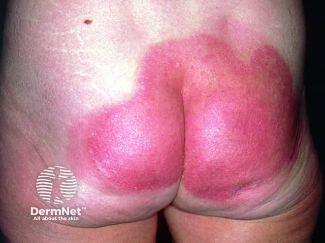
На этом снимке — кожа ягодиц и крестца после шести недель применения кальципотриола. Обратите внимание: крупный сплошной очаг псориаза значительно побледнел, инфильтрация уменьшилась. Именно так выглядит клинический ответ на препарат без кортикостероидного компонента. Это важно для тактики: кальципотриол выбирают там, где длительное применение топических стероидов нежелательно — на лице, в крупных складках, у детей.
Физиотерапия — обязательный компонент лечения, а не дополнительный. УФ-облучение применяют в стационарной и регрессирующей стадиях. ПУВА-терапия — метод фотохимиотерапии: пациент принимает внутрь или наносит на кожу фотосенсибилизатор (псорален), после чего кожу облучают длинноволновым ультрафиолетом (UVA, 320–400 нм). Псорален встраивается в ДНК кератиноцитов и под действием UVA тормозит их деление. Метод высокоэффективен при распространённом псориазе. Ре-ПУВА-терапия — комбинация ретиноидов и ПУВА: ретиноид снижает дозу УФ, необходимую для ответа, и уменьшает суммарную нагрузку облучением. Узкополосная UVB (311 нм) — более современная альтернатива: она действует непосредственно на T-лимфоциты в дерме и не требует фотосенсибилизатора. Парафиновые аппликации применяют как вспомогательный метод на участках с выраженным гиперкератозом.
Однако у ПУВА-терапии есть серьёзный долгосрочный риск. Посмотрите на снимок ниже.
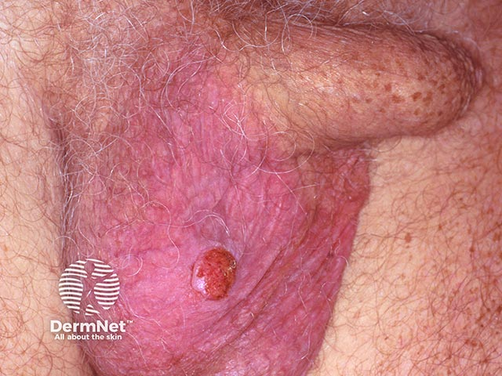
На снимке — плоскоклеточный рак кожи мошонки, возникший как осложнение ПУВА-терапии по поводу псориаза. Одиночный округлый узел с неровным краем на фоне изменённой кожи — классическая картина. Кумулятивная доза УФА при длительных курсах ПУВА — прямой онкологический риск, особенно для кожи половых органов, защита которых во время процедуры обязательна. Это ещё один аргумент в пользу узкополосной UVB там, где суммарная нагрузка длительная.
Санаторно-курортное лечение показано в период стабилизации процесса: Сочи, Мацеста, Пятигорск, Кисловодск. Используют сульфидные и радоновые источники. При прогрессирующей стадии, а также при экссудативной и пустулёзной разновидностях псориаза санаторное лечение противопоказано.
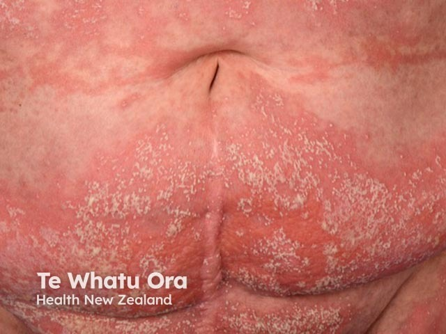
На этом кадре — генерализованный пустулёзный псориаз: сплошная эритема кожи живота со сливающимися «озёрами» из пустул. Именно при такой картине санаторное лечение абсолютно противопоказано, системные кортикостероиды назначают с осторожностью из-за риска рикошетного обострения, а в схему включают цитостатики и ретиноиды. Это одна из самых тяжёлых форм болезни, нередко требующая госпитализации.
Схемы, описанные выше, удобно охватить одним взглядом в Таблице 1. Как видите в таблице, граница между стадиями — не просто академическое разделение: за ней стоит реальный выбор мази. Редуцирующие средства в прогрессирующей стадии способны обострить процесс, тогда как в регрессирующей они необходимы для завершения разрешения бляшек. Кортикостероиды и кальципотриол — единственные средства без стадийного ограничения, что делает их универсальным «фоном» любой схемы наружного лечения.
Главный практический вывод раздела: лечение псориаза никогда не бывает одношаговым. Стадия — определяет наружные средства. Тяжесть — определяет необходимость системной терапии. Наличие стресса — требует психотропного компонента. Длительность физиотерапии — требует онкологической настороженности. Именно поэтому схема лечения пересматривается при каждом визите, а не выдаётся один раз на весь курс.
Красный плоский лишай: определение, эпидемиология и этиопатогенез
Среди хронических воспалительных дерматозов красный плоский лишай занимает особое место: он поражает одновременно кожу, слизистые оболочки и ногтевые пластины, давая узнаваемую картину мономорфных зудящих папул. Папулы при этом заболевании плоские, полигональные, с характерным восковидным блеском — и именно это сочетание признаков отличает его от большинства других дерматозов, где высыпания разнородны. Заболевание составляет около 1% всех кожных болезней, а болеют преимущественно люди 30–60 лет, причём женщины несколько чаще мужчин.
Этиология красного плоского лишая до сих пор окончательно не выяснена. Сложилось несколько теорий, и ни одна из них не стала исчерпывающим ответом. Нейрогенная теория опирается на давно замеченную связь между обострениями болезни и психоэмоциональным стрессом: у многих пациентов дебют или рецидив совпадает с острым нервным потрясением или длительным хроническим напряжением. Вирусная теория связывает заболевание с инфекционными агентами; особое внимание привлекает хронический гепатит С — его сочетание с красным плоским лишаём описывается достаточно часто, чтобы считаться не случайным. Наконец, токсико-аллергическая теория указывает на лекарственную непереносимость: препараты золота, мышьяка, ртути, хинина, фтивазид, ПАСК, стрептомицин, тетрациклин, левамизол, хингамин — каждый из них способен спровоцировать так называемую лихеноидную реакцию, то есть высыпания, неотличимые по виду от истинного красного плоского лишая, но вызванные конкретным химическим агентом. Схожие изменения дают аутоинтоксикация при заболеваниях желудочно-кишечного тракта, сахарный диабет и нарушения функции печени.
Иммунная теория сегодня считается наиболее обоснованной, и она же объясняет механизм повреждения кожи точнее других. Представьте себе эпидермис послойно: снизу — базальные кератиноциты, прямо над дермой; над ними — шиповатый, зернистый слои; выше — роговой. При красном плоском лишае атака направлена именно на базальные кератиноциты — нижний, самый уязвимый ряд. Цепочка событий разворачивается так. Сначала антигенпрезентирующие клетки кожи активируются под влиянием неизвестного пока триггера — вирусного, химического или стрессорного. Они представляют антиген цитотоксическим CD8+ Т-лимфоцитам, которые мигрируют из крови в дерму и скапливаются непосредственно у базальной мембраны. Эти лимфоциты распознают кератиноциты как «чужое» — примерно так, как клетки донора распознаются при реакции трансплантата против хозяина — и запускают их программируемую гибель, апоптоз кератиноцитов. Апоптоз — это не разрушение клетки извне, а её собственная «самоликвидация» по команде Т-лимфоцита: клетка сворачивается, фрагментируется и поглощается соседями без воспалительного выброса содержимого. Не будь этого механизма направленной гибели, иммунная система была бы вынуждена разрушать ткань грубее — через некроз с массивным воспалением. Погибшие базальные кератиноциты в гистологических препаратах видны как округлые эозинофильные тельца прямо у дермоэпидермальной границы — их называют телами Сиватта. Одновременно в этой зоне откладываются иммуноглобулины: IgG и IgM в дермоэпидермальной зоне, фибрин вдоль базальной мембраны. Количество циркулирующих Т-лимфоцитов при этом снижается, а соотношение Т-хелперы/Т-супрессоры смещается в сторону хелперов.
Таким образом, красный плоский лишай — это иммуноопосредованное воспалительное заболевание, в основе которого лежит цитотоксическая атака CD8+ Т-лимфоцитов на базальные кератиноциты, запускаемая комплексом нейрогенных, инфекционных, токсико-аллергических и генетических факторов. Именно многофакторность этиологии объясняет, почему единственная причина болезни до сих пор не найдена — у разных пациентов в роли триггера оказывается своё звено из длинной цепи.
Морфология первичного элемента КПЛ и патогномоничные признаки
Красный плоский лишай — дерматоз с единственным первичным элементом: папулой. Она мономорфна, то есть попросту одна и та же на всём теле, и уже по форме этой папулы можно поставить диагноз.

Типичная папула КПЛ диаметром 2–5 мм. Её описывают через четыре признака — «правило 4P»: Planar (плоская), Polygonal (многоугольная), Purple (фиолетово-сиреневая), Pruritic (зудящая). Поверхность блестит, особенно в боковом освещении, в центре — небольшое пупкообразное вдавление. Цвет — красно-сиреневый с перламутровым оттенком, который трудно перепутать с чем-либо другим: он возникает от особого преломления света в изменённом эпидермисе.
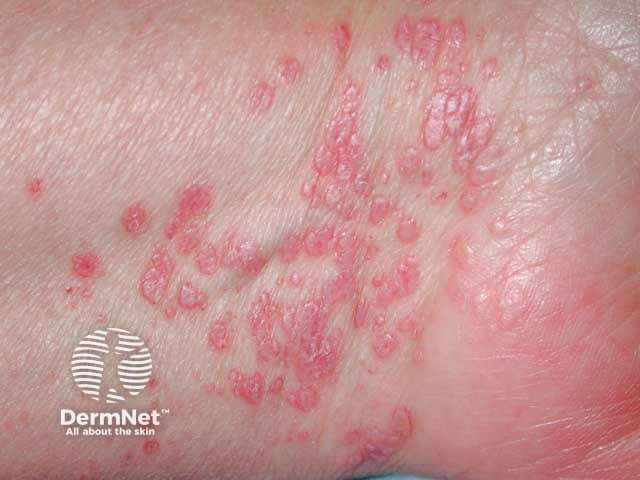
Посмотрите на снимок выше: здесь хорошо виден классический очаг на сгибательной поверхности запястья — именно там, где КПЛ появляется чаще всего. Обратите внимание на цвет: не просто «красный» и не «розовый», а тот самый розовато-фиолетовый с сиреневым отливом. Поверхность папул гладкая и блестящая. Многоугольные очертания заметны там, где элементы не слились.
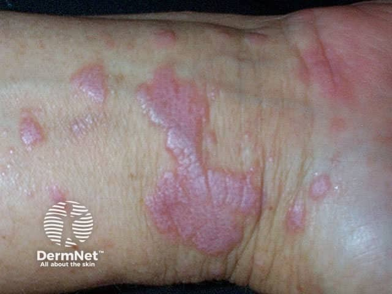
На этом втором снимке — более крупный план: папулы и небольшие бляшки на запястье. Видно, как отдельные элементы сохраняют полигональные очертания, а на поверхности некоторых из них проступает характерный белесоватый рисунок — это и есть сетка Уикхема, то есть попросту переплетение белых точек и полосок, видимое невооружённым глазом или под лупой после нанесения капли растительного масла.
Сетка Уикхема — патогномоничный признак КПЛ. Её природа объясняется гистологически: в папулах неравномерно утолщён зернистый слой эпидермиса — гранулёз (то есть попросту слой клеток, богатых кератогиалиновыми гранулами, который в норме насчитывает 1–2 ряда, а при КПЛ достигает 5 и более рядов). Там, где гранулёз толще, свет преломляется иначе — и на поверхности папулы возникает неравномерный белесоватый узор. Масло убирает блик с рогового слоя и делает рисунок отчётливым. На слизистых оболочках сетка видна и без масла — белесоватые линии и точки на фоне невозвышающихся папул.
Теперь о том, что видно под микроскопом. Гистологическая картина КПЛ складывается из нескольких слоёв изменений — сверху вниз. В эпидермисе — гиперкератоз (утолщение рогового слоя), тот самый неравномерный гранулёз и акантоз с характерной деталью: межсосочковые отростки заострены книзу, как зубья пилы — отсюда «симптом пилы».[3, с. 102] В базальном слое — вакуольная дистрофия клеток, то есть попросту их набухание и появление внутри пустот, что ведёт к постепенному разрушению нижней границы эпидермиса. На рубеже эпидермиса и дермы лежат тельца Сиватта — погибшие кератиноциты, иногда видны щелевидные пространства.[3, с. 102]
Главная черта дермального компонента — полосовидный инфильтрат, то есть попросту плотная горизонтальная полоса из лимфоцитов и гистиоцитов в верхней дерме. Снизу эта полоса имеет чёткую границу, а верхним краем вплотную примыкает к базальному слою — отчего под микроскопом граница между эпидермисом и дермой выглядит «размытой». Это сочетание — диффузный полосовидный инфильтрат с чёткой нижней и размытой верхней границей — в биоптате практически неотличимо от КПЛ при другом диагнозе.
Гиперкератоз при КПЛ относится к пролиферационному типу: он формируется на фоне утолщения зернистого и шиповатого слоёв, а не за счёт замедленного отшелушивания. Это принципиально отличает его от ретенционного гиперкератоза при ихтиозе, где зернистый слой, напротив, истончён или отсутствует.
В прогрессирующей стадии у больных КПЛ закономерно выявляется положительный феномен Кебнера — новые папулы появляются в местах травматизации кожи.[6, с. 114] Папулы склонны группироваться в бляшки, кольца или располагаться линейно; локализация типичная — сгибательные поверхности лучезапястных суставов и предплечий, передняя поверхность голеней, крестец.[6, с. 114]
Таким образом, диагноз КПЛ строится на трёх опорах: характерный вид папулы по правилу 4P, сетка Уикхема как патогномоничный клинический симптом и полосовидный лимфогистиоцитарный инфильтрат с вакуольной дистрофией базального слоя при гистологическом исследовании.
Клинические формы КПЛ на коже и слизистых оболочках
Красный плоский лишай — заболевание с широким клиническим разнообразием. Чтобы не запутаться в формах, удобно сначала разобраться с типичной картиной, а потом отходить от неё шаг за шагом.
Типичная форма — это мономорфная сыпь из плоских полигональных папул красно-сиреневого цвета с характерным пупкообразным вдавлением в центре.[6, с. 114] Излюбленные места — сгибательные поверхности предплечий и лучезапястных суставов, внутренняя поверхность бёдер, разгибательная поверхность голеней, паховые и подмышечные области, слизистые оболочки. У мужчин нередко вовлекается кожа полового члена; на красной кайме губ появляются фиолетовые плоские бляшки с характерной сеточкой. Папулы склонны группироваться в бляшки, кольца, гирлянды или выстраиваться линейно.[6, с. 114] Регресс, как правило, оставляет заметную гиперпигментацию.
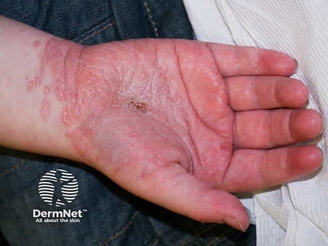
Ниже — таблица всех основных форм КПЛ. Загляните в неё, чтобы сразу охватить картину целиком, а затем вернитесь к тексту: каждая строка разобрана подробно.
| Форма | Морфология | Локализация | Особенности течения |
|---|---|---|---|
| Типичная | Плоские полигональные папулы 2–5 мм, красно-сиреневые, с пупковидным вдавлением; сетка Уикхема | Сгибатели предплечий, лучезапястные суставы, голени, паховые и подмышечные области | Зуд; феномен Кебнера; регресс с гиперпигментацией |
| Кольцевидная | Папулы и бляшки с разрешением в центре; центр коричневый | Кожа туловища, половые органы | Кольцеобразный рост периферии при регрессе центра |
| Линейная | Папулы, выстроенные в линейные цепочки | Конечности (по ходу расчёсов — феномен Кебнера) | Нередко провоцируется травмой кожи |
| Бородавчатая (веррукозная) | Бляшки фиолетового или буровато-красного цвета, резко возвышающиеся, с массивными роговыми наслоениями; по периферии — типичные папулы | Преимущественно нижние конечности | Резистентна к терапии; выраженный зуд |
| Атрофическая | После регресса первичных элементов — атрофические пятна лиловой окраски; на коже — рубец | Кожа, слизистые | Встречается в 2–10% случаев |
| Пемфигоидная (буллёзная) | Пузыри на папулах, бляшках, эритематозных участках и неизменённой коже | Кожа; при локализации на волосистой части головы — рубцовая алопеция | Нарушение общего состояния; после разрешения — атрофия и гиперпигментация; может быть паранеопластическим синдромом |
| Эрозивно-язвенная | Эрозии и мелкие язвы неправильных очертаний с розовато-красной поверхностью; плотный бляшечный инфильтрат по периферии | Слизистая рта (щёки, дёсны, красная кайма губ), голени | Самая тяжёлая форма; кровоточивость; резкая болезненность; синдром Гриншпана–Потекаева при сочетании с сахарным диабетом и гипертонией |
| Гиперкератотическая | Сплошные очаги ороговения с резкими границами на фоне типичных папул | Слизистая полости рта | Стойкое течение |
| Экссудативно-гиперемическая | На фоне эритемы и отёка слизистой — белесоватые папулы-сеточки | Слизистая полости рта | Жжение и сухость во рту |
| Пигментная | Выраженная пигментация кожи без чёткой связи с активными папулами | Открытые участки кожи | Редкая форма |
| Фолликулярная | Фолликулярные и перифолликулярные папулы | Волосистая часть головы, подмышечные впадины, лобок | Рубцовая алопеция на голове; нерубцовая — в подмышечных впадинах и на лобке |
Теперь разберём каждую атипичную форму — именно они чаще всего вызывают диагностические трудности.
Кольцевидная форма КПЛ возникает, когда папулы и бляшки разрешаются в центре, а периферия продолжает расти: образуются кольца с коричневатым центром и активным лилово-розовым краем. Посмотрите на снимок ниже — там хорошо виден именно этот феномен: тёмный центр уже в стадии регресса, а по краю — свежие папулёзные элементы.
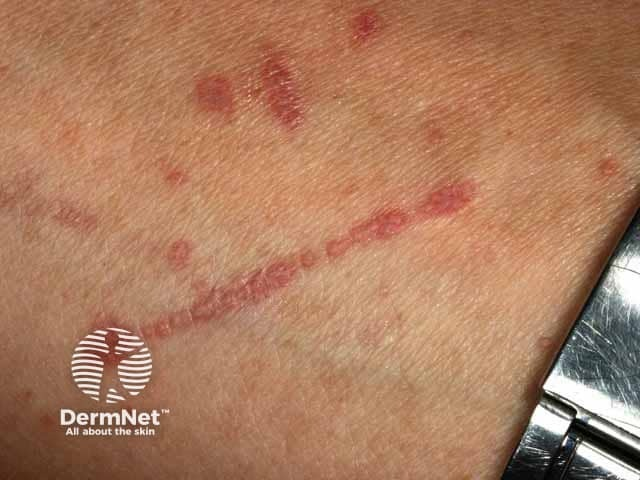
На этом снимке хорошо заметна линейная цепочка розово-красных узелков — элементы выстроились по ходу травмы кожи. Это линейная форма КПЛ, классический пример феномена Кебнера: папулёзные элементы появляются там, где кожа была повреждена расчёсом или царапиной. Линейная конфигурация — не самостоятельная болезнь, а вариант расположения сыпи, который встречается при КПЛ довольно характерно.
Бородавчатая (веррукозная) форма КПЛ — это бляшки фиолетового или буровато-красного цвета, которые значительно возвышаются над кожей и покрыты массивными роговыми наслоениями. Представьте старую мозоль, только окрашенную в лиловый цвет и окружённую типичными для КПЛ полигональными папулами по периферии — это точный бытовой образ того, как выглядит бородавчатый очаг. Локализуется форма преимущественно на нижних конечностях и отличается стойким, резистентным к лечению течением.
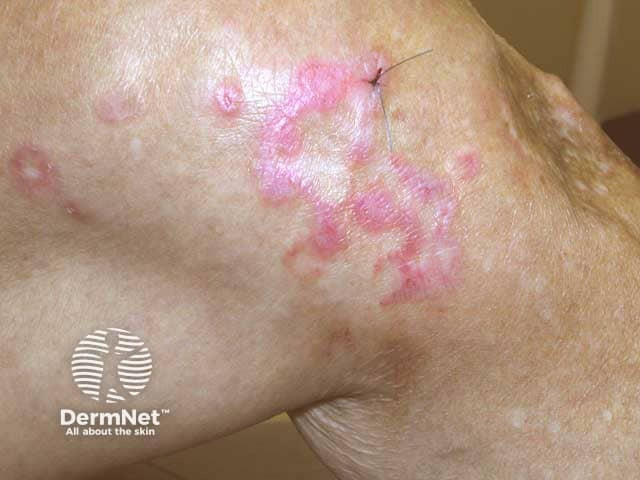
На этом снимке — гипертрофический КПЛ в области сустава: несколько розово-фиолетовых колец с плотными роговыми наслоениями. Обратите внимание, насколько элементы возвышаются над окружающей кожей — это и отличает бородавчатую форму от типичной.
Атрофическая форма КПЛ развивается после регресса первичных высыпаний: на их месте остаются атрофические пятна лиловой окраски, а на коже формируется рубец. По данным разных авторов, такой исход наблюдается в 2–10% случаев — цифры расходятся, но суть одна: рубцевание при КПЛ редко, но реально, и об этом стоит предупреждать пациентов.
Пемфигоидная (буллёзная) форма проявляется пузырями, которые возникают не только на уже изменённых папулах и бляшках, но и на эритематозных участках и внешне здоровой коже. На слизистых оболочках буллёзная форма КПЛ характеризуется пузырями с плотной покрышкой размером до 0.8 см с серозно-геморрагическим содержимым, существующими 1–2 суток и вскрывающимися с образованием эрозий, склонных к самостоятельной эпителизации. Общее состояние нарушается. После разрешения остаются атрофия и гиперпигментация; при локализации на волосистой части головы развивается рубцовая алопеция. Важно помнить: пемфигоидная форма КПЛ может быть паранеопластическим синдромом, то есть её появление должно настораживать в отношении скрытой опухоли.
Поражение слизистых оболочек при КПЛ встречается в 25–70% случаев. Это не осложнение — это нормальная часть болезни, просто нередко упускаемая при осмотре. Слизистая полости рта (щёки, язык, дёсны, нёбо), красная кайма губ и слизистая половых органов поражаются в разных формах, и их клиника заметно отличается от кожной.[6, с. 114]
При типичной форме на слизистой видны белесоватые папулы, формирующие рисунок кружева и сетки; они не возвышаются над окружающей тканью; характерны сухость и локализация по ходу смыкания зубов, на нёбе, языке, дёснах. Посмотрите на снимок ниже — именно этот рисунок кружевной сетки делает диагноз КПЛ слизистой практически очевидным при осмотре.
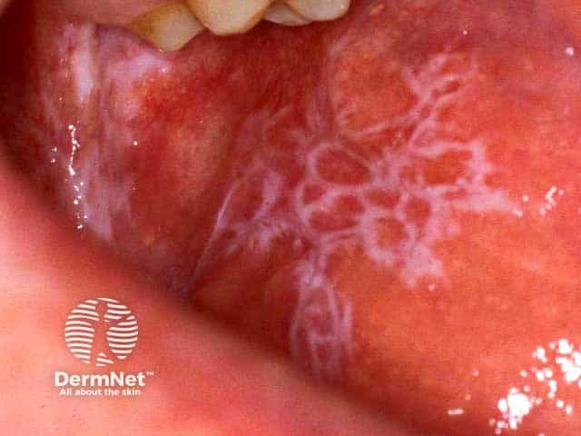
На этом снимке — реticulate-форма КПЛ слизистой щеки: тонкий кружевной узор белесоватых папул на фоне неизменённой слизистой, характерный именно для типичного поражения. Регресс на слизистых идёт медленнее, чем на коже.
Экссудативно-гиперемическая форма выглядит иначе: на фоне эритемы и отёчной слизистой оболочки видны те же белесоватые папулы-сеточки, но теперь на воспалённом основании; пациентов беспокоит жжение и сухость во рту.
Эрозивно-язвенная форма КПЛ — самая тяжёлая. Эрозии и мелкие язвы неправильных или округлых очертаний плохо эпителизируются, покрыты фибринозным налётом, кровоточат и резко болезненны; в основании и по периферии — плотный бляшечный инфильтрат, а вокруг — типичные белесоватые папулы. Эрозии при КПЛ образуются прямо на папулёзных высыпаниях при их локализации на слизистых. Особо следует выделить синдром Гриншпана–Потекаева: эрозивно-язвенный КПЛ у больных сахарным диабетом и гипертонической болезнью.
На этом снимке — эрозивная форма КПЛ слизистой рта крупным планом: видна неравномерная, плохо отграниченная эрозия с фибринозным налётом и воспалённым краем. Именно такой вид напоминает о предраковом потенциале этой формы: длительно существующие эрозии на слизистой оболочке требуют онкологической настороженности.
При буллёзной форме на слизистой пузыри с плотной покрышкой существуют лишь 1–2 суток: после вскрытия остаются пузыри с серозно-геморрагическим содержимым размером до 0,8 см, а образующиеся эрозии склонны к самостоятельной эпителизации. При гиперкератотической форме на слизистой образуются сплошные очаги ороговения с резкими границами на фоне типичных высыпаний.
Поражение ногтей при КПЛ — продольные борозды, углубления, участки помутнения, продольное расщепление, онихолизис. Ногтевые пластинки истончаются и разрушаются; чаще всего страдают ногти больших пальцев ног.
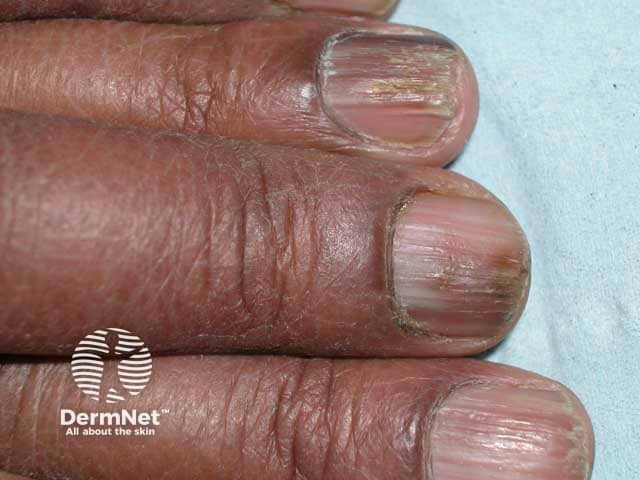
На этом снимке — онихорексис (продольное расщепление и бороздчатость ногтевых пластин) при КПЛ: пластинки неровные, исчерчены продольными бороздами, местами расщеплены. Сравните с нормальным ногтем по краю кадра — разница хорошо заметна.
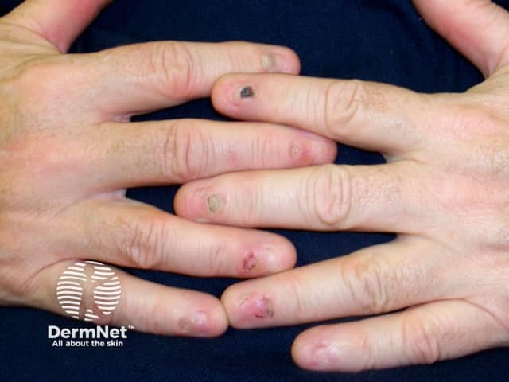
Ещё один вариант ногтевой дистрофии при КПЛ — на обеих кистях видно помутнение и деформацию нескольких пластин сразу. Поражение множественных ногтей при КПЛ — не редкость, и его легко спутать с онихомикозом, поэтому при подобной картине стоит помнить о дерматозе.
Отдельного внимания заслуживает предраковый потенциал поражений слизистых при КПЛ. Эрозивно-язвенная форма — наиболее опасная в этом отношении: длительно незаживающие эрозии и язвы на слизистой полости рта требуют динамического наблюдения с биопсией при любом подозрении на малигнизацию. Регресс высыпаний на слизистых в целом идёт медленнее, чем на коже, что дополнительно увеличивает время контакта слизистой с хроническим воспалительным процессом.
Итог раздела. Клиническое многообразие КПЛ определяется не случайностью, а закономерными изменениями морфологии первичного папулёзного элемента — его размера, группировки, степени кератинизации и локализации. Знание всех десяти форм позволяет не пропустить атипичное течение и вовремя заподозрить осложнение: рубцевание, буллёзную трансформацию или предраковые изменения слизистых.
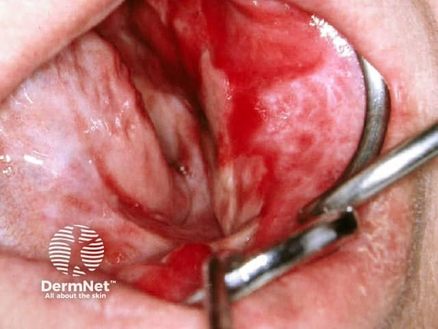
Дифференциальная диагностика и лечение КПЛ
Клинический диагноз красного плоского лишая в типичных случаях ставится без гистологии: сиреневато-перламутровый оттенок папул, их полигональная форма, пупкообразное вдавление в центре, сеточка Уикхема на поверхности и локализация на сгибательных поверхностях — всё вместе образует картину, которую трудно спутать с чем-либо ещё. Но «трудно» не означает «невозможно», и именно здесь начинается работа по дифференциальной диагностике.
Разберём её через три шага клинического мышления — от того, что видит врач, к тому, что он из этого выводит, и что делает дальше.
Шаг первый: что видит врач. На сгибательных поверхностях предплечий — множество плоских блестящих папул фиолетового оттенка с белесоватым сетчатым рисунком на поверхности. Зуд значительный. Элементы не шелушатся — или шелушатся совсем чуть-чуть. Уже на этом этапе врач исключает псориаз: при нём папулы розово-красные, покрыты серебристо-белыми чешуйками, положительна псориатическая триада, а локализация — преимущественно разгибательные поверхности. Папулы КПЛ блестят и не осыпаются; псориатические — шелушатся обильно.
Шаг второй: что врач из этого выводит. Отсутствие шелушения и характерный цвет сужают круг до КПЛ, токсидермии, красной волчанки, вульгарной пузырчатки, многоформной экссудативной эритемы, герпетиформного дерматита Дюринга и папулёзного сифилида. Последний — важная ловушка: его папулы тоже полигональны, тоже на сгибателях, но медно-красного, а не сиреневого оттенка, и серологические реакции на сифилис положительны. При лихеноидном туберкулёзе папулы мельче, буроватые, собираются в кольца и оставляют рубчики. Ограниченный нейродермит даёт лихенификацию с огрублением кожного рисунка, но без блеска и сеточки Уикхема. Руброфития может имитировать КПЛ при кольцевидном росте очагов, однако при ней всегда обнаруживается мицелий при микроскопии чешуек.
Шаг третий: что врач делает дальше. Исключив конкурентов, он оценивает течение и стадию — именно они определяют лечение. Течение КПЛ хроническое: без терапии оно длится 6–9 месяцев, а в 20% случаев принимает рецидивирующий характер. Болезнь проходит стадию прогрессирования с появлением свежих элементов, затем стационарный период длиной в несколько месяцев, затем регресс. После регресса папул на их месте остаётся гиперпигментация постКПЛ — стойкое потемнение кожи, сохраняющееся в течение нескольких недель и даже месяцев.[6, с. 24] Это поствоспалительный признак: меланоциты отвечают на хроническое воспаление усиленной выработкой пигмента, и он никуда не уходит сразу после того, как исчезли сами папулы. Гипертрофические и эрозивно-язвенные очаги могут малигнизироваться — и это меняет тактику.
Диагноз поставлен. Переходим к лечению.
Системная терапия выстраивается по нескольким направлениям. Седативные средства — препараты валерианы, пустырника, брома, при необходимости транквилизаторы и антидепрессанты — составляют обязательный фон, поскольку нейрогенный компонент в патогенезе КПЛ хорошо документирован. Антигистаминные препараты снижают зуд. Для детоксикации используют гемодез и плазмаферез, к ним добавляют энтеросорбенты. Гистоглобулин проводят курсами как гипосенсибилизирующий агент.
При острых распространённых формах назначают кортикостероиды системно — короткими курсами, около 40–50 мг/сут в пересчёте на преднизолон, не более 2–3 недель. Более длительное применение при КПЛ не оправдано: риски перевешивают пользу. Ароматические ретиноиды (неотигазон, ацитретин) показаны при упорных и гиперкератотических формах. Препараты хинолинового ряда — делагил (хлорохин, хингамин) — применяют как антималярийные с иммуномодулирующим действием; никотиновую кислоту или теоникол добавляют для улучшения микроциркуляции. При резистентных и генерализованных формах в ход идёт циклоспорин А. Витамины группы В и аскорбиновая кислота включаются в схему как вспомогательные средства.
Местная терапия ориентирована прежде всего на зуд. Охлаждающие взбалтываемые взвеси с 1–2% ментолом и анестезином дают быстрое симптоматическое облегчение. Кортикостероидные кремы и мази применяют на всех стадиях; при крупных и бородавчатых очагах показано их обкалывание кортикостероидами непосредственно в ткань. Криодеструкция и лазеротерапия используются для отдельных упорных элементов.
Из физиотерапевтических методов при распространённых формах КПЛ применяют ПУВА-терапию; рефлексотерапия входит в арсенал дополнительных воздействий.
Особого внимания заслуживает эрозивно-язвенная форма на слизистых. Это самая тяжёлая форма: плохо эпителизирующиеся эрозии с фибринозным налётом, резкая болезненность, кровоточивость. Буллёзная форма даёт пузыри с плотной покрышкой, которые на слизистой существуют всего 1–2 суток, после чего вскрываются. Атрофическая форма встречается, по данным разных авторов, в 2–10% случаев. Эрозивно-язвенная форма рассматривается как предраковое состояние: длительно существующие очаги на слизистой рта способны малигнизироваться, и такие пациенты нуждаются в регулярном онкологическом контроле. Местно при тяжёлом поражении слизистой рта назначают полоскания раствором циклоспорина или кортикостероида; системная терапия при этой форме обязательна.
Дифференциальный диагноз КПЛ не завершается с постановкой диагноза: атопический дерматит, с которым КПЛ нередко существует в одном потоке направлений, требует собственного разграничения — с себорейным дерматитом, чесоткой, ихтиозом, ограниченным нейродермитом, микробной экземой, розовым лишаем, дерматофитией, лимфомой кожи в ранней стадии и болезнью Дюринга. Это отдельная задача, но она показывает, насколько перекрываются клинические картины зудящих дерматозов — и насколько важно удерживать в голове весь их спектр одновременно.
Нейродерматозы: общая характеристика, классификация и патогенез
Кожа и нервная система развиваются из одного зародышевого листка — эктодермы. Этот факт эмбриологии имеет прямое клиническое следствие: нервная система способна запускать кожную болезнь без какого-либо внешнего агента, действуя изнутри. Именно на этом основан термин нейродерматоз — заболевание кожи, в патогенезе которого ведущую роль играют изменения нервной системы, а главным и нередко единственным симптомом служит зуд.
Группа нейродерматозов объединяет несколько самостоятельных нозологий. Перечислим их по убыванию распространённости, чтобы была видна иерархия: кожный зуд (генерализованный и локализованный), атопический дерматит (он же диффузный нейродермит), ограниченный нейродермит, почесуха и крапивница. Критерий включения в группу единый: зуд не просто присутствует — он определяет всю картину болезни, предшествует морфологическим изменениям кожи или существует вместо них.
Внутри группы прослеживается чёткая логика нарастания поражения. Кожный зуд — это болезнь без первичной сыпи: на коже находят только вторичные элементы — экскориации и геморрагические корочки, а ногти приобретают характерный полированный блеск от постоянного расчёсывания. Ограниченный нейродермит добавляет к зуду очаг уплотнения кожи. Атопический дерматит распространяет процесс на обширные площади: при ограниченно-локализованной форме поражение не превышает 10% кожного покрова, при распространённой — от 10 до 50%. Почесуха занимает особое место: её папулы и узлы — прямой результат расчёсывания, то есть сама болезнь частично создаётся руками пациента.
Теперь о патогенезе — он общий для всей группы, хотя удельный вес каждого звена в разных нозологиях различается. Основу составляют нейровегетативные нарушения: изменяется тонус вегетативной нервной системы, нарушается микроциркуляция, трофика и потоотделение в коже. Эти сдвиги делают кожу гиперреактивной — она отвечает зудом на стимулы, которые у здорового человека его не вызывают. Параллельно работает гуморальное звено: тучные клетки, базофилы и кератиноциты выделяют нейропептиды — субстанцию P, кальцитонин-ген-родственный пептид, нейротензин. Эти вещества связываются с рецепторами немиелинизированных С-волокон в эпидермисе, и именно они запускают ощущение зуда. Сосудистое звено замыкает круг: расширение капилляров дермы усиливает доступность медиаторов к нервным окончаниям.
При хроническом течении включается механизм, который называют центральной сенситизацией — повышением возбудимости зудовых путей на уровне спинного мозга и коры. Суть проста: чем дольше человек чешется, тем ниже порог, при котором возникает следующий приступ зуда. Нейроны заднего рога спинного мозга перестраиваются так, что начинают отвечать на всё более слабые сигналы с периферии. В итоге зуд самоподдерживается даже тогда, когда первоначальный триггер давно устранён. Именно центральная сенситизация объясняет, почему нейродерматозы так трудно поддаются лечению: недостаточно убрать периферический раздражитель — нужно перестроить реакцию центральной нервной системы.
Морфологическим итогом хронического расчёсывания становится лихенизация (или лихенификация) — уплотнение и огрубение кожи с усилением её рисунка. Механически: многократная травма кератиноцитов запускает пролиферацию эпидермиса и отложение коллагена в дерме. Очаг лихенизации — это буквально след, который зуд оставляет на коже. Именно поэтому при ограниченном нейродермите центральная зона очага представлена лихенизацией, средняя — отдельными лихеноидными папулами, а периферическая — гиперпигментацией.
Особого разбора требует кожный зуд как самостоятельная нозологическая форма. Зуд бывает физиологическим — при укусах насекомых — и патологическим. Патологический зуд может быть симптомом экземы, атопического дерматита, красного плоского лишая, чесотки; но может существовать и как единственное проявление болезни — тогда говорят о кожном зуде как нозологической единице. Наружно при нём применяют 1–2% ментол, взбалтываемые взвеси с ментолом и анестезином. Генерализованный зуд нередко оказывается первым симптомом болезней крови, лейкозов, лимфогранулематоза, сахарного диабета, поражений печени и почек, глистных инвазий — и это делает его ещё и диагностическим сигналом о системном неблагополучии.
Сравните два типа расчёсывания — они принципиально различны по механизму и прогнозу. При почесухе пациент расчёсывает кожу ногтями так интенсивно, что буквально снимает эпидермис; это называют биопсирующим зудом — по аналогии с биопсией, поскольку кожа удаляется слоями. Результат — глубокие кровянистые корки и рубцы. Совершенно другое явление — патомимия: здесь повреждение кожи намеренно наносит сам больной, скрывая это от врача; экскориации при патомимии имеют неестественно правильные очертания и располагаются строго в зоне досягаемости руки. Разграничить эти два состояния важно, потому что лечебная тактика противоположна: при биопсирующем зуде почесухи нужна дерматологическая терапия, при патомимии — обязательная консультация психиатра.
Обратите внимание на одно важное соотношение величин: заболеваемость атопическим дерматитом у детей в развитых странах составляет 13–37%, у взрослых — лишь 0,2–2%. Разница — от 18 до 185 раз в зависимости от верхней и нижней границ диапазонов. Это не случайность: у большинства пациентов болезнь дебютирует в раннем детстве и со временем ослабевает или переходит в ограниченные формы. Практический вывод: взрослый пациент с клиникой диффузного нейродермита — это в подавляющем большинстве случаев человек с детским анамнезом болезни, а не новый случай. В России заболеваемость атопическим дерматитом составляет 5,9% — цифра промежуточная между педиатрической и взрослой статистикой развитых стран, что отражает суммарный учёт всех возрастных групп.
Нейродермит и атопический дерматит: клиника, диагностика и лечение
Кажется, что нейродермит — это просто «нервный зуд», то есть кожа реагирует на стресс, почешется и пройдёт. На деле атопический дерматит — хроническое аллергическое заболевание кожи с наследственной предрасположенностью, которое сопровождается мучительным зудом и протекает с обострениями и ремиссиями годами. Стресс лишь провоцирует очередной эпизод, но не является ни причиной, ни тем более всей болезнью. Генетика, иммунный дефект, аллергены и нарушение барьерной функции кожи — вот что стоит за этим диагнозом. Исторически его называли диффузным нейродермитом, а также эндогенной или конституциональной экземой; сегодня все эти термины считаются синонимами атопического дерматита.
Масштаб проблемы велик. В развитых странах заболеваемость атопическим дерматитом у детей составляет 13–37%, у взрослых — 0,2–2%. В России заболеваемость составляет 5,9%. Иными словами, в любой детской поликлинике атопический дерматит — один из самых частых диагнозов; во взрослой практике он встречается реже, но течёт упорнее.
Классификация
Атопический дерматит делят по трём основаниям. По возрасту выделяют три фазы: младенческую (до 2 лет), детскую (2–13 лет) и подростково-взрослую (от 13 лет). По распространённости процесса: ограниченно-локализованная форма — площадь поражения не превышает 10% кожного покрова; распространённая — от 10 до 50%; диффузная — более 50%. По тяжести течения выделяют лёгкую, среднетяжёлую и тяжёлую формы — критериями служат частота обострений, площадь поражения и ответ на проводимое лечение. Наконец, по морфологии различают четыре формы: экссудативную, эритематозно-сквамозную, эритематозно-сквамозную с лихенизацией и лихеноидную.
Этиология и патогенез
Атопический дерматит — полиэтиологическое заболевание с полигенным наследованием по пороговому принципу: несколько «малых» генов в совокупности дают фенотип болезни только при достаточной генетической нагрузке. Экзогенные факторы — пищевые и воздушные аллергены, пыль, шерсть животных, микроорганизмы — работают как пусковые.
Ключевой патогенетический механизм — хроническое аллергическое воспаление. В острую фазу преобладают Т2-хелперы: они стимулируют синтез IgE, которые фиксируются на поверхности тучных клеток и базофилов. При повторном контакте с аллергеном IgE-антитела — реагины — связываются с ним и запускают дегрануляцию: в ткань выбрасываются гистамин, нейропептиды, цитокины. В хроническую фазу баланс смещается в сторону Т1-хелперов, воспаление приобретает черты клеточно-опосредованного. Дополнительный вклад вносят микробная и грибковая флора: Malassezia furfur и Candida продуцируют специфические IgE, сенсибилизируют кожу и активируют дермальные лимфоциты. Нарушение синтеза керамидов ведёт к сухости и повышенной проницаемости кожного барьера, а изменение реактивности вегетативной нервной системы — к характерному белому дермографизму и нарушению пиломоторных реакций.
Важно и то, что атопический дерматит у ребёнка — фактор риска последующего развития атопической бронхиальной астмы и аллергического ринита: так называемый «атопический марш» начинается именно с кожи.
Клиническая картина по возрастным фазам
До двух лет болезнь протекает преимущественно как экссудативная форма: на лице, разгибательных и сгибательных поверхностях конечностей, а к концу этого периода — в складках суставов, на запястьях и шее — появляются гиперемия, отёчность, мокнутие и корки.
В детском периоде (2–13 лет) картина меняется: хроническое воспаление, эритема, папулы, шелушение, инфильтрация, лихенизация, экскориации и трещины. Именно в этом возрасте появляется симптом Денни–Моргана — дополнительная складка нижнего века, характерная для атопиков.
У подростков и взрослых на первый план выходит инфильтрация с лихенизацией; эритема приобретает синюшный оттенок. Поражаются лицо, шея, верхняя половина туловища и верхние конечности.
Гистология
При микроскопии в острой стадии выявляются паракератоз, очаговый спонгиоз, акантоз, отёк сосочкового слоя, расширение сосудов с периваскулярным лимфоцитарным инфильтратом. При хроническом течении — более выраженный акантоз, гиперкератоз, слабый спонгиоз; периваскулярные инфильтраты приобретают смешанный характер: Т-лимфоциты, моноциты, тучные клетки, эозинофилы.
Ограниченный нейродермит
Это хроническое воспалительное зудящее поражение кожи, которое может быть локальным проявлением атопического дерматита, а может существовать и самостоятельно — на фоне гормональных расстройств или травм. Излюбленная локализация — задняя поверхность шеи, область голеностопных суставов, половые органы. Очаг построен из трёх концентрических зон: в центре — лихенизация (уплотнение кожи с усилением рисунка, грубоватой поверхностью и сухостью), в средней зоне — мелкие лихеноидные папулы, по периферии — гиперпигментация. Субъективно — мучительный зуд, нередко усиливающийся ночью и при эмоциональном напряжении.
Диагностические критерии атопического дерматита
Диагноз атопического дерматита ставится клинически. Критерии сформулированы на Первом международном симпозиуме и разделяются на большие (обязательные) и малые (дополнительные).
| Большие критерии (обязательные) | Малые критерии (дополнительные) |
|---|---|
| Кожный зуд (преимущественно вечерний и ночной) | Сухость кожи (ксеродерма) |
| Типичная морфология и локализация высыпаний: у детей — лицо и разгибательные поверхности; у взрослых — лихенификация на сгибательных поверхностях | Белый дермографизм |
| Хроническое рецидивирующее течение с сезонностью (ухудшение зимой, улучшение летом) | Хейлит |
| Семейная или индивидуальная атопия в анамнезе | Симптом Денни–Моргана (дополнительная складка нижнего века) |
| Начало в детском возрасте | Гиперпигментация периорбитальной области |
| Обострение под влиянием провоцирующих факторов (аллергены, раздражители, пища, стресс) | Повышение IgE в сыворотке крови; эозинофилия |
| Ихтиоз, ладонная гиперлинейность, фолликулярный кератоз | |
| Тенденция к стафилодермиям |
Посмотрите на таблицу — она показывает, что диагноз не строится на одном симптоме. Большие критерии — это скелет: зуд, характерная для данного возраста локализация, хроническое течение с сезонностью, отягощённый аллергоанамнез и дебют в детстве. Каждый из них обязателен. Малые критерии дополняют картину: сухость кожи, белый дермографизм, хейлит, симптом Денни–Моргана, гиперпигментация вокруг глаз, повышенный IgE и эозинофилия. Ни один малый признак сам по себе не решает диагноз, но их совокупность делает его убедительным. Из лабораторных исследований назначают клинический анализ крови (эозинофилия), определение IgE в сыворотке и кожные аллергические пробы.
Фолликулярный кератоз заслуживает отдельного внимания — это один из дополнительных признаков атопии. Посмотрите на снимок ниже.
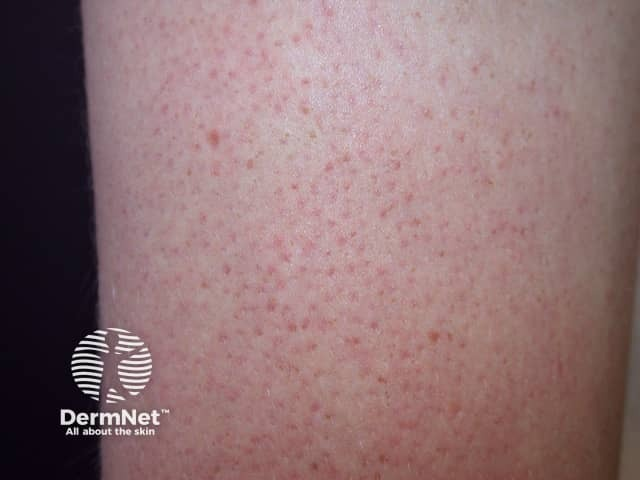
На этом снимке виден keratosis pilaris — фолликулярный кератоз: множественные мелкие красноватые точечные элементы, каждый из которых соответствует устью волосяного фолликула, закупоренного роговой пробкой. Кожа на ощупь напоминает тёрку. Это доброкачественное, но упорное состояние — характерный малый признак атопического дерматита, особенно на плечах и бёдрах.
Осложнения
Нарушение кожного барьера при атопическом дерматите открывает дорогу инфекциям. Среди осложнений — вторичная пиококковая инфекция, бородавки, контагиозный моллюск, микоз гладкой кожи, себорейный дерматит, дерматогенная лимфаденопатия. Самое опасное — герпетиформная экзема Капоши: генерализованная инфекция вирусом простого герпеса на фоне нарушенного иммунного ответа кожи.
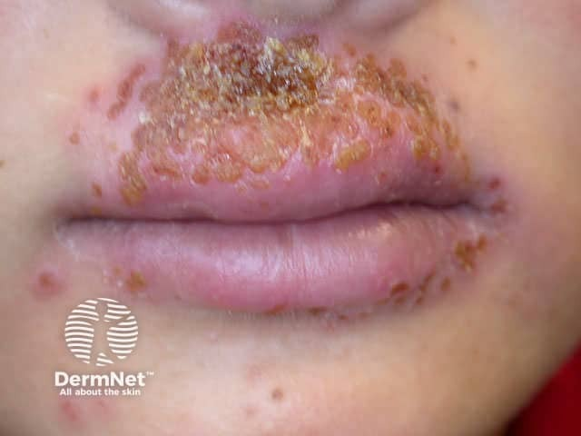
На этом снимке — типичная картина герпетиформной экземы Капоши: эритематозные элементы с пузырьками и эрозиями в периоральной области и на губах, сливающиеся в обширные болезненные участки. Отличие от простого герпеса — массивность и распространённость высыпаний, которые захватывают участки кожи, исходно изменённые атопическим дерматитом. Увидев такую картину, нужно думать о срочной противовирусной терапии.
Отдельно стоит упомянуть синдром Андогского — сочетание атопического дерматита с ранней катарактой. Катаракта у молодого пациента с хроническим зудящим дерматозом — сигнал: нужно искать атопию. Помимо этого, у части больных атопический дерматит сочетается с ихтиозом, что утяжеляет как симптоматику, так и прогноз.
Дифференциальную диагностику проводят с себорейным дерматитом, чесоткой, ихтиозом обыкновенным, ограниченным нейродермитом, дерматофитией, лимфомой кожи в ранней стадии и болезнью Дюринга.
Лечение
Лечение должно быть комплексным — с воздействием на все звенья патогенеза, с учётом клинической формы и тяжести.
Первый шаг — элиминационные мероприятия: устранение контакта с причинными аллергенами. Это исключение домашних животных, влажная уборка для снижения концентрации пыли, а главное — гипоаллергенная диета. Из рациона убирают цитрусовые, рыбу, молоко, яйца, шоколад, орехи и другие облигатные аллергены. Без этого шага медикаменты работают вполне ожидаемо плохо.
Системная терапия строится из нескольких блоков. Антигистаминные препараты блокируют Н1-рецепторы: они дают и симптоматический, и патогенетический эффект; большинство из них обладают дополнительным седативным действием, что особенно ценно при ночном зуде. Детоксикационная и гипосенсибилизирующая терапия помогают снизить аллергическую нагрузку: в качестве детоксицирующего средства при атопическом дерматите применяют 5% раствор унитиола по 5,0 мл внутримышечно (курс № 6–8), а также препараты кальция и натрия тиосульфат.[6, с. 104] При тяжёлых и осложнённых формах назначают системные глюкокортикостероиды, иммунодепрессанты, антибактериальные препараты, психотропные средства, ферменты и иммуномодуляторы.
Наружное лечение подбирается в зависимости от стадии. При мокнутии — примочки и влажно-высыхающие повязки с вяжущими противомикробными растворами. При хроническом воспалении и лихенизации применяют кремы и пасты с противозудными и противовоспалительными компонентами, нафталанскую нефть, АСД-III, дёготь. При лёгких и умеренных обострениях — короткие курсы топических стероидов (элоком, адвантан) с последующим переходом на базовые средства ухода; местные ингибиторы кальциневрина (элидел) применяются как альтернатива стероидам, особенно на лице и в складках. При ограниченном нейродермите эффективны также обкалывание очагов стероидами или местными анестетиками, фонофорез стероидов, иглорефлексотерапия и грязелечение.
Физиотерапия и санаторно-курортное лечение (Сочи, Пятигорск, Кисловодск) — обязательная часть программы в период стабилизации процесса.
Профилактика направлена на предупреждение рецидивов: диспансерное наблюдение, индивидуальный подбор терапии с учётом формы, тяжести, возраста пациента, фоновых состояний и внекожных проявлений атопии. Атопический дерматит не «перерастают» сам по себе — его ведут, и от качества этого ведения зависит, станет ли он фоном для бронхиальной астмы или останется управляемой кожной болезнью.
Почесуха: детская (строфулюс), хроническая взрослых и узловатая; кожный зуд
Почесуха — это целая группа заболеваний кожи, объединённых двумя общими чертами: мучительным зудом и высыпаниями в виде папул, уртикарий или папуло-везикул. Внутри группы три формы, различающиеся возрастом дебюта, морфологией элементов и тяжестью течения: детская почесуха (строфулюс), почесуха взрослых и узловатая почесуха (нейродермит узловатый, или почесуха Гайда). Разобраться в их различиях проще всего, держа перед глазами сравнительную таблицу — она ниже. Но сначала — каждая форма отдельно, потому что таблица сжимает, а детали решают диагноз.
Детская почесуха — строфулюс
Строфулюс (strophulus) — детская почесуха, возникающая у детей от 5 месяцев до 5 лет. Главный провоцирующий фактор — пищевые аллергены: коровье молоко, яйца, мёд, цитрусовые. Морфологический рисунок высыпаний характерен: на фоне уртикарного пятна сидит плотная папула с маленьким пузырьком на вершине — папуло-везикула. После расчёсывания пузырёк вскрывается, и на его месте остаётся геморрагическая корочка. Элементы рассыпаны по разгибательным поверхностям конечностей, ягодицам и туловищу, не сливаются между собой.
Дифференциальный диагноз строфулюса проводят прежде всего с чесоткой и крапивницей. От чесотки строфулюс отличает отсутствие чесоточных ходов и характерной ночной интенсификации зуда у всех членов семьи; от крапивницы — наличие стойкой папулёзной составляющей, тогда как при крапивнице элемент (волдырь) исчезает бесследно за несколько часов.
Хроническая почесуха взрослых
У взрослых почесуха теряет уртикарный компонент и становится более монотонной: диссеминированная папуло-везикулёзная сыпь располагается преимущественно на разгибательных поверхностях конечностей, реже — на туловище. Папулы плотные, красновато-бурого цвета, 3–5 мм в диаметре, с геморрагической корочкой на вершине. Течение хроническое, рецидивирующее на протяжении многих месяцев или лет. Уртикарный компонент, в отличие от строфулюса, обычно отсутствует.[6, с. 110]
Узловатая почесуха
Узловатая почесуха — наиболее тяжёлая и упорная форма. Болеют преимущественно женщины старше 40 лет с неустойчивой нервной системой.[6, с. 110] Развитие заболевания связывают с патологией печени и желчного пузыря — гепатитом, циррозом, хроническим холециститом, — а также с нарушениями нейроэндокринной системы; стрессовые состояния и укусы насекомых играют роль провоцирующих факторов.[6, с. 110]
Морфологически болезнь резко отличается от предыдущих форм. На разгибательных поверхностях конечностей появляются плотные полушаровидные крупные папулы диаметром до 1 см, буровато-красного цвета, резко выступающие над окружающей кожей, — по виду они напоминают узлы.[6, с. 110] Зуд при узловатой почесухе достигает такой интенсивности, что больной расчёсывает кожу до крови предметами, срывая эпидермис, — это так называемый биопсирующий зуд. В центре папул от расчёсов образуются ссадины, покрывающиеся кровянистыми корочками. Каждый элемент сохраняется годами: причина — выраженная гиперплазия нервных окончаний в основании узла.[6, с. 110] Некоторые элементы со временем покрываются бородавчатыми наслоениями, и тогда дифференциальный диагноз проводят с бородавчатой формой красного плоского лишая.[6, с. 110]
Любая форма почесухи нередко осложняется вторичной пиококковой инфекцией — фолликулитами и импетиго.[6, с. 110]
Сравнительная таблица форм почесухи
Посмотрите на таблицу ниже — она позволяет увидеть все три формы рядом и сразу почувствовать, насколько они разные по возрасту, морфологии и тактике лечения.
| Признак | Детская (строфулюс) | Взрослых | Узловатая (Гайда) |
|---|---|---|---|
| Возраст | 5 мес — 5 лет | Взрослые | Преимущественно женщины старше 40 лет |
| Морфология | Папуло-везикулы на уртикарном фоне, геморрагические корочки | Плотные папулы 3–5 мм красновато-бурого цвета с геморрагической корочкой | Плотные полушаровидные папулы до 1 см, буровато-красные, бородавчатые наслоения |
| Провоцирующие факторы | Пищевые аллергены (молоко, яйца, цитрусовые) | Пищевые аллергены, хронические инфекции | Болезни печени и желчного пузыря, стресс, укусы насекомых |
| Уртикарный компонент | Есть | Отсутствует | Отсутствует |
| Течение | Рецидивирующее, возрастная инволюция | Хроническое, многомесячное | Многолетнее, элементы сохраняются годами |
| Лечение | Диета, антигистаминные, седативные, УФО | Диета, антигистаминные, седативные, физиотерапия | Транквилизаторы, десенсибилизация, инфузионная терапия, обкалывание кортикостероидами, криодеструкция |
Если смотреть по строкам этой таблицы, картина складывается так. Строфулюс — болезнь раннего детства, от 5 месяцев до 5 лет, с уртикарным фоном и пищевыми аллергенами в основе. Взрослая форма теряет уртикарный компонент и даёт плотные красновато-бурые папулы размером 3–5 мм с геморрагической корочкой, хронически рецидивируя на протяжении месяцев и лет. Узловатая форма — самая тяжёлая: папулы вырастают до 1 см, болеют преимущественно женщины старше 40 лет с патологией гепатобилиарной системы, и каждый узел сохраняется годами из-за гиперплазии нервных окончаний. Именно поэтому лечение трёх форм тоже расходится: если строфулюсу достаточно диеты, антигистаминных и УФО, то при узловатой форме приходится добавлять транквилизаторы, инфузионную терапию (гемодез, плазмаферез), а также местные процедуры — обкалывание узлов кортикостероидами, криодеструкцию и диатермокоагуляцию.
Лечение почесухи
Основа лечения любой формы почесухи — строгая гипоаллергенная диета с устранением пищевых провокаторов. Системно назначают антигистаминные препараты и седативные средства; при узловатой форме — транквилизаторы, десенсибилизирующую терапию (тиосульфат натрия, препараты кальция) и инфузионную терапию. Наружно используют противозудные взвеси с ментолом и анестезином, кортикостероидные мази. Из физиотерапевтических методов применяют УФО, диадинамические токи, магнитотерапию, ультразвук на область надпочечников и лазеротерапию. При узловатой форме дополнительно — обкалывание элементов кортикостероидами, криодеструкция и диатермокоагуляция отдельных узлов.
Крапивница и отёк Квинке
К группе нейродерматозов и аллергодерматозов тесно примыкают крапивница и отёк Квинке. Клиническая картина крапивницы складывается из внезапного появления мономорфной сыпи в виде зудящих волдырей, сопровождающихся слабостью, снижением артериального давления, желудочно-кишечными расстройствами, невротическим состоянием и субфебрилитетом с ознобом — так называемой крапивной лихорадкой.
Дифференциальный диагноз крапивницы проводят с токсикодермией, васкулитом, герпетиформным дерматозом Дюринга, детской почесухой, мастоцитозом и паразитарными дерматозами. В терапии крапивницы применяют лечебное голодание на 3–5 дней, слабительные и очистительные клизмы, энтеросорбенты, антигистаминные средства I и II поколений и препараты кальция; при упорном и тяжёлом течении назначают кортикостероиды пролонгированного действия — дипроспан 2,0 мл внутримышечно 1 раз в 14 дней.[6, с. 106]
Особую опасность представляет клиника отёка Квинке (ангионевротического отёка): это появление плотного безболезненного отёка в местах с хорошо развитой подкожно-жировой клетчаткой — на лице (губы, веки) и в полости рта (мягкое нёбо, язык, миндалины). У 25% больных поражается дыхательная система (гортань, трахея, бронхи) с развитием приступов удушья и асфиксии, требующих экстренной госпитализации в ЛОР-отделение. Возможно развитие отёка пищевода, желудка, кишечника, мочевыделительной и нервной систем с дисфагией, тошнотой, метеоризмом, задержкой мочи и головными болями.
Неотложная помощь при отёке Квинке включает подкожное или внутримышечное введение 0,1% раствора адреналина гидрохлорида по 0,5–1 мл в различные участки тела с интервалом 15–20 минут, парентеральное введение кортикостероидов (преднизолон 120–240 мг или дексаметазон 8–12 мг внутривенно либо внутримышечно), диуретики (лазикс 40–80 мг внутривенно струйно), антигистаминные препараты и 10% раствор кальция хлорида 10 мл внутривенно.
Кожный зуд
Зуд — это ощущение потребности расчёсывания; физиологически его рассматривают как видоизменённое чувство боли, воспринимаемое нервными рецепторами эпидермиса. Он бывает физиологическим — при укусах насекомых, и патологическим — при целом ряде системных заболеваний.[6, с. 107] Различают генерализованный кожный зуд и локализованный (ограниченный).[6, с. 107]
Генерализованный кожный зуд и его связь с системными болезнями
Генерализованный кожный зуд может оказаться единственным симптомом серьёзного внутреннего заболевания — и именно это делает его диагностически важным сигналом, который нельзя сводить к «нервам» или «аллергии». Он бывает симптомом болезней крови (лейкозы, лимфогранулематоз), обменных нарушений, поражения печени и почек, аутоинтоксикации при заболеваниях ЖКТ, новообразований и глистной инвазии.
Среди разновидностей генерализованного зуда выделяют несколько самостоятельных форм. Старческий зуд наблюдается у лиц старше 60 лет вследствие инволюционных изменений в коже.[6, с. 107] Высотный зуд возникает при подъёме на высоту свыше 7000 м над уровнем моря — его причина в раздражении барорецепторов.[6, с. 107] Солнечный (световой) зуд развивается при фотосенсибилизации и появляется летом как ранний симптом фотодерматоза. Отдельно выделяют аутотоксический зуд — от пищевых продуктов и лекарственных препаратов.
Локализованный кожный зуд
Причины ограниченного зуда принципиально иные. Чаще всего это энтеробиоз, воспалительные изменения в области вульвы, уретры или прямой кишки, а также ограниченный вегетоневроз с местным нарушением микроциркуляции, трофики и потоотделения. Анальный зуд при энтеробиозе — хрестоматийный пример: паразит механически раздражает рецепторы, и зуд строго ограничен перианальной областью, а устраняется лишь лечением основной инвазии.
Клиника и диагностика кожного зуда
Клиническая картина кожного зуда как самостоятельного дерматоза на первый взгляд парадоксальна: первичных элементов сыпи нет вовсе. Есть только вторичные — экскориации и геморрагические корочки как следствие расчёсывания. Объективным признаком хронического зуда служит симптом «полированных ногтей»: постоянное трение ногтевых пластин о кожу приводит к их повышенному блеску, стачивая поверхностные слои пластины.[6, с. 107] Это важная деталь осмотра — когда больной отрицает расчёсывание, полированные ногти выдают его.
Не будь этого объективного признака, пришлось бы полностью полагаться на слова пациента — а субъективная жалоба без единого кожного элемента крайне сложно поддаётся объективной документации.
Диагностика включает обязательный минимум: общий анализ крови и мочи, биохимическое исследование крови, анализ кала на скрытую кровь и яйца гельминтов, рентгенографию органов грудной клетки, УЗИ органов брюшной полости и функциональное обследование щитовидной железы. Такой объём обследования позволяет не пропустить системную причину.
Лечение кожного зуда
Лечение начинают с терапии выявленного системного заболевания — без этого симптоматические средства дают лишь временное облегчение. Симптоматически назначают десенсибилизирующие препараты, антигистаминные средства и транквилизаторы. Психотропные средства — транквилизаторы, нейролептики, антидепрессанты — показаны при нейродерматозах с выраженными нервно-психическими нарушениями. Дополнительно рекомендуют витамины группы В и витамин С.
Наружная терапия при генерализованном зуде строится на противозудных препаратах: 2–3% спиртовые или водные растворы уксусной, карболовой, салициловой кислот, 1–2% ментол, взбалтываемые взвеси с ментолом и анестезином. При локализованном зуде — кортикостероидные кремы при отсутствии противопоказаний.
Объективные признаки зуда на коже
Взгляните на два снимка предплечья ниже: на них видна кожа человека с узловатой почесухой.
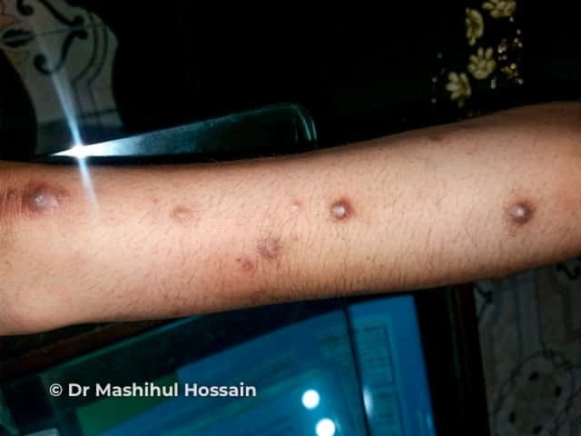
На этом снимке хорошо видны множественные гиперпигментированные очаги на предплечье — это характерная картина узловатой почесухи у человека с тёмной кожей. Обратите внимание: каждый узел оставляет после себя стойкое тёмное пятно, даже если острое воспаление уже стихло. Именно такая поствоспалительная пигментация — следствие многолетнего существования элементов и хронической травматизации кожи при расчёсывании.
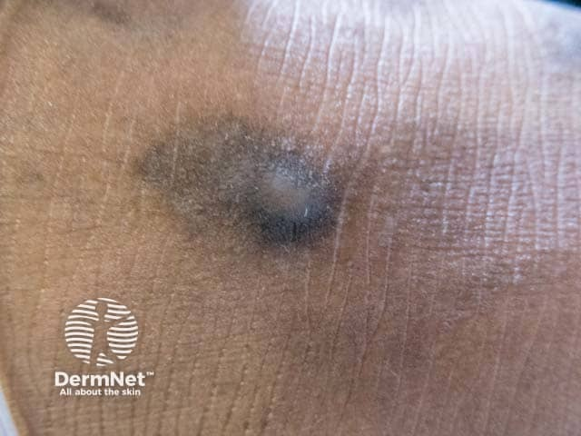
На крупном плане видно отдельно взятое гиперпигментированное пятно — то самое, что остаётся от единичного узла. Центр несколько запавший и покрытый плотной кровянистой корочкой: это след биопсирующего зуда. Здесь наглядно видно, почему дифференциальный диагноз с бородавчатой формой красного плоского лишая бывает непростым — плотная бородавчатая поверхность элементов схожа, — но при КПЛ элементы дают характерную сиреневатую окраску и симптом Уикхема, а узлы почесухи имеют буровато-красный тон и чёткую связь с расчёсами.[6, с. 110]
Источники
- 5_Лекция_псориаз,_красный_плоский_лишай
- 8. Лекция нейродерматозы
- Конспект лекций дерматология
- 4_лекция_дерматит,_токсикодермия,_экзема
- 2. лекция Пиодермиты
- Иванов — Кожные и венерические болезни